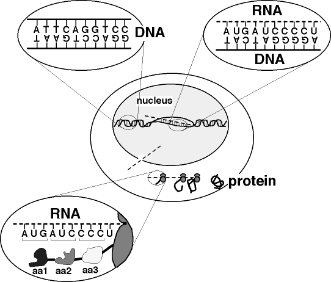
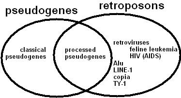
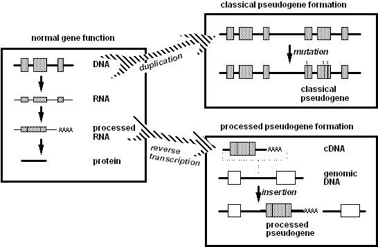
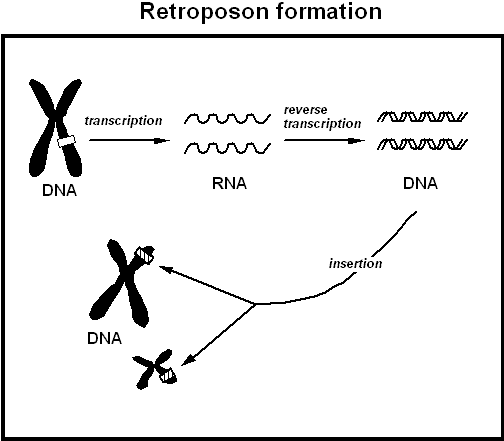
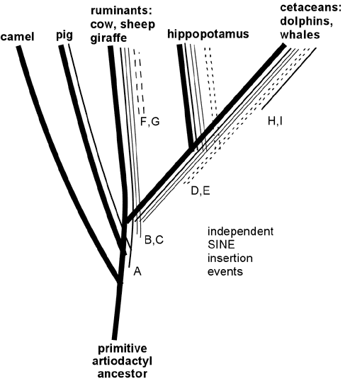

Plagierte Fehler und Molekulargenetik
Ein weiterer Streitpunkt in der Evolution-Kreationismus-Debatte
von Edward E. Max, M.D., Ph.D.Der folgende Aufsatz ist eine Aktualisierung eines Artikels, den ich 1986 in Creation/Evolution veröffentlicht habe (XIX, S. 34). Ich stelle ihn mit Genehmigung von Creation/Evolution zur Verfügung.

|
Andere Links:
|
1. Einleitung
Die meisten Wissenschaftler betrachten die Beweise für die Evolution als überwältigend. Daher scheitern sie in ihrer Überzeugung, dass die Evolution bereits umfassend und ausreichend dokumentiert ist, manchmal daran, zu bedenken, wie neue Entdeckungen Beweise für die Evolution liefern könnten, die für Personen, die sich kreationistischen Überzeugungen nähern, überzeugend wirken könnten. In diesem Artikel beschreibe ich einige Entdeckungen aus meinem eigenen Fachgebiet der Molekularbiologie, deren Implikationen für die Kontroverse zwischen Kreationismus und Evolution nicht explizit diskutiert wurden, als sie veröffentlicht wurden. Ich versuche darzulegen, wie sie Beweise für die Evolution liefern, die sowohl überzeugend als auch konzeptionell einfach genug sind, um von einem interessierten Laien verstanden zu werden.
Der neue molekulare Befund betrifft eine Fragestellung, die meiner Meinung nach einer der wenigen Fälle ist, in denen ein kreationistisches Argument logische Konsistenz demonstriert hat und die evolutionäre Position bis zum Stillstand geführt hat. Es geht um die Frage, wie die Ähnlichkeiten zwischen modernen lebenden Arten, insbesondere die auf molekularer Ebene beobachteten Ähnlichkeiten, zu interpretieren sind. Wie wir sehen werden, lösen die jüngsten Entdeckungen der Molekularbiologie diesen Stillstand eindeutig zugunsten der Evolution auf.
1.1 Die evolutionäre Sicht auf Ähnlichkeiten zwischen Arten
Betrachten wir zunächst, wie Evolutionisten Ähnlichkeiten zwischen heute lebenden Arten interpretieren. Menschen und Schimpansen der Gegenwart weisen trotz offensichtlicher äußerer und verhaltensbezogener Unterschiede extrem ähnliche innere Organe und physiologische Funktionen auf; ihre Gene sind tatsächlich zu über 98% identisch (Goodman et al., J Molec Evolution 30:260,1990). Genau wie die Ähnlichkeit zwischen zwei Geschwistern auf gemeinsame Elternschaft hindeutet, deutet die Ähnlichkeit zwischen Arten auf gemeinsame Vorfahren hin. Evolutionisten glauben, dass Menschen, Gorillas und Schimpansen von einem gemeinsamen Vorfahren abstammen: einem menschenaffenähnlichen Lebewesen, das vor vielleicht fünf bis zehn Millionen Jahren lebte, was geologisch gesehen relativ kürzlich war. (Die Vorstellung, dass Menschen und Affen einen gemeinsamen Vorfahren teilen könnten, scheint Kreationisten aufgrund der theologischen Implikationen einer solchen Beziehung und der klaren Widersprüchlichkeit zur wörtlichen Interpretation der biblischen Genesis besonders inakzeptabel.) Arten, die dem Menschen weniger ähnlich sind als Affen – beispielsweise Mäuse – werden angenommen, vor Millionen von Jahren früher von einem gemeinsamen primitiven Säugetier-Vorfahren abzweigen. Evolutionäre Stammbaumdiagramme, die solche Beziehungen zwischen Arten ausdrücken, wurden von evolutionären Biologen durch die Analyse von Ähnlichkeiten bei heutigen Organismen erstellt. In vielen Fällen können fossilisierte Überreste ausgestorbener Arten verwendet werden, um die Merkmale solcher evolutionären Bäume zu stützen; Fossilienbeweise werden jedoch in diesem Artikel nicht diskutiert.
Ein weiterer umfangreicher Datenquelle, die von großer Bedeutung für die Konstruktion von Ähnlichkeitsbaumdigrammen ist, stellt der Vergleich von Proteinen und Genen zwischen Arten dar. Proteine sind große biologische Moleküle, die aus Subeinheiten namens Aminosäuren bestehen, die wie die Wagen eines Zuges aneinandergehängt sind. Es gibt zwanzig verschiedene Arten von Aminosäuren, die in Proteinen verwendet werden, und die meisten Proteine enthalten Hunderte dieser Subeinheiten. Jedes Protein hat eine spezifische Anzahl und Reihenfolge von Aminosäuren, und diese Sequenz bestimmt die Eigenschaften, die dieses Protein aufweist. Damit eine Zelle ein spezifisches Protein synthetisieren kann, muss sie auf eine „Informationsbank" zugreifen, in der Aminosäuresequenzen gespeichert sind; diese Informationsbank besteht aus den Genen des Organismus, die die in Molekülen aus Desoxyribonukleinsäure (DNA) codierten Aminosäuresequenzen enthalten. Biochemiker können Proteine reinigen und die exakte Sequenz ihrer Aminosäuren ermitteln, oder sie können diese Informationen erhalten, indem sie die entsprechende Sequenz aus der DNA eines Organismus ablesen. Es wurde beträchtliche Mühe in den Vergleich der Sequenzen ähnlicher Proteine, die aus verschiedenen Arten isoliert wurden, investiert. Zum Beispiel wurde ein Protein namens „Cytochrom c" in mehr als achtzig Arten untersucht. Diese Cytochrom-c-Aminosäuresequenzen stellen „digitale" Datenbits dar, die verwendet werden können, um Unterschiede zwischen Arten zu quantifizieren, und diese Unterschiede können verwendet werden, um evolutionäre Bäume zu konstruieren, ähnlich wie jene, die auf Vergleichen „analoger" Merkmale der Körperanatomie basieren. Solche Proteinsequenzbäume – ebenso wie Bäume, die auf Ähnlichkeiten der DNA-Struktur basieren – stimmen bemerkenswert gut mit den früher aus anatomischen Ähnlichkeiten abgeleiteten evolutionären Bäumen überein. Die Übereinstimmung evolutionärer Bäume, die aus völlig unterschiedlichen Arten von Daten konstruiert wurden (z. B. Goodman et al Mol Phylogenet Evol 9:585, 1998), wurde von Evolutionisten als Beweis für die Gültigkeit des intellektuellen Rahmens angesehen, auf dem die Bäume basieren: die Evolutionstheorie (siehe Jukes, in Scientists Confront Creationism, edited by Godfrey, WW Norton, New York 1983; Creation/Evolution XVIII:42, 1986; Goodman et al., J Mol Evol 30: 260, 1990).
1.2 Die kreationistische Sicht auf Ähnlichkeiten zwischen Arten führt zu einer Sackgasse
Jedoch haben Kreationisten eine alternative Interpretation der Ähnlichkeiten in den Aminosäuresequenzen, die in den evolutionistischen Stammbäumen reflektiert werden. Sie behaupten, dass solche Sequenzähnlichkeiten bei „verwandten" Arten lediglich die Wahl des Schöpfers widerspiegeln, ähnliche Arten so zu gestalten, dass sie ähnlich funktionieren, nicht nur auf der Ebene von Knochen, Muskeln und Organen, sondern auch auf der Ebene der Proteinfunktion – daher die Ähnlichkeiten in den Aminosäuresequenzen.
Daher können die Ähnlichkeiten zwischen Arten in der Anatomie und der Proteinstruktur auf zwei völlig unterschiedliche Weise interpretiert werden. Die Evolutionisten sagen, dass die Ähnlichkeit zwischen Merkmalen von beispielsweise Menschen und Affen darauf hinweist, dass diese Merkmale von einem gemeinsamen Vorfahren vererbt wurden; das heißt, die ähnlichen Merkmale von Menschen und Affen werden durch moderne Kopien von Genen bestimmt, die einst in einer Art existierten, die sowohl Affen als auch Menschen voranging. Die Kreationisten sagen, dass Affen und Menschen unabhängig voneinander erschaffen wurden, aber mit ähnlichen Merkmalen entworfen wurden, damit sie ähnlich funktionieren. Sowohl die Genkopie- als auch die unabhängige Schöpfungsansicht scheinen mit den Ähnlichkeitsdaten vereinbar zu sein, aber welche Ansicht ist korrekt?
1.3 Ein möglicher Ansatz zur Auflösung der Sackgasse
Eine Möglichkeit, zwischen Kopieren und unabhängiger Schöpfung zu unterscheiden, wird durch eine Analogie zu folgenden beiden Fällen aus der Rechtsliteratur angedeutet. Im Jahr 1941 verklagte der Autor eines Chemie-Lehrbuchs den Autor eines konkurrierenden Lehrbuchs, weil Teile seines Lehrbuchs als plagiiert vorlagen (Colonial Book Co, Inc. v. Amsco School Publications, Inc., 41 F. Supp.156 (S.D.N.Y. 1941), aff'd 142 F.2d 362 (2nd Cir. 1944)). Im Jahr 1946 erhob der Herausgeber eines Branchenverzeichnisses für die Bauindustrie ähnliche Vorwürfe gegen einen konkurrierenden Verlagsbetrieb (Sub-Contractors Register, Inc. v McGovern's Contractors & Builders Manual, Inc. 69 F.Supp. 507, 509 (S.D.N.Y. 1946)). In beiden Fällen wurde bloße Ähnlichkeit zwischen dem Inhalt der angeblichen Kopien und den Originalen nicht als überzeugender Beweis für Kopieren angesehen. Schließlich beschreiben beide Chemie-Lehrbücher denselben Körper chemischen Wissens (die Bücher waren so konzipiert, dass sie „ähnlich funktionieren") und beide Verzeichnisse listen Mitglieder derselben Branche auf, sodass eine erhebliche Übereinstimmung auch erwartet werden würde, selbst wenn kein Kopieren stattgefunden hätte. Allerdings traten in beiden Fällen Fehler auf, die in den „Originalen" vorhanden waren und auch in den angeblichen Kopien erschienen. Die Gerichte urteilten, dass es undenkbar sei, dass dieselben Fehler unabhängig voneinander von jedem Kläger und Beklagten gemacht worden sein könnten, und entschieden in beiden Fällen, dass Kopieren stattgefunden hatte. Das Prinzip, dass duplizierte Fehler auf Kopieren hindeuten, ist nun in der Urheberrechtsgesetzgebung gut etabliert. (Als Anerkennung dieser Tatsache fügen Verlagsfirmen routinemäßig falsche Einträge in ihre Verzeichnisse ein, um potenzielle Plagiateure zu fangen.)
Können „Fehler" bei modernen Arten als Beweis für das „Kopieren" von alten Vorfahren verwendet werden? Tatsächlich scheint die Antwort auf diese Frage „ja" zu sein, da jüngste molekulargenetische Untersuchungen einige Beispiele derselben „Fehler" im genetischen Material von Menschen und Affen aufgedeckt haben. Um diese Ergebnisse zu verstehen, ist es notwendig, etwas über DNA zu wissen, die chemische Molekül, in dem genetische Informationen gespeichert sind.
2.1 DNA-Grundlagen
In einer Hinsicht ähnelt die Grundstruktur der DNA der von Proteinen: beide bestehen aus linearen Ketten unterschiedlicher Subeinheiten. Abgesehen von diesem gemeinsamen Merkmal unterscheidet sich die DNA-Struktur erheblich von der von Proteinen. Die Subeinheiten in der DNA werden Nukleotide oder Basen genannt, und die Sequenz dieser Nukleotide enthält die genetische Information, die die Sequenz der Aminosäuren in jedem vom Organismus hergestellten Protein festlegt. Während 20 verschiedene Aminosäuren die Subeinheiten von Proteinen bilden, gibt es in der DNA nur vier verschiedene Nukleotidbasen, die allgemein mit A, T, G und C abgekürzt werden. Gemäß dem in den 1960er Jahren von Wissenschaftlern abgeleiteten „genetischen Code" wird jede Aminosäure durch ein oder mehrere Nukleotidtripletts festgelegt; beispielsweise legt die Sequenz GCG die Aminosäure Alanin fest. Da es 64 verschiedene Triplets (jedes wird Codon genannt) gibt und nur 20 Aminosäuren zu spezifizieren sind, werden einige Aminosäuren durch mehr als ein Triplet dargestellt (z. B. codieren ATA, ATC und ATT alle für die Aminosäure Isoleucin); und drei Triplets – TAA, TAG und TGA – stellen „Stop-Codons" dar, die das Ende der Gensequenz markieren, die verwendet werden kann, um die Aminosäuresequenz festzulegen.
|
 |
|
Abbildung 1. DNA-Grundlagen. Der zentrale Oval repräsentiert eine Zelle, innerhalb der sich der Zellkern befindet. Innerhalb des Zellkerns existiert die meisten DNA als Doppelhelix. Das Oval oben links zeigt eine vergrößerte Ansicht der DNA, bei der die Helices „entwunden" gezeichnet sind, um die Ähnlichkeit mit einer Leiter aufzuzeigen. Die genetische Information ist in den Sequenzen der Nukleotidbasen (A, T, G oder C) gespeichert, die die Sprossen der Leiter bilden. Jede Sprosse wird von einem Paar von Nukleotidbasen gebildet, die sich berühren, wobei eine Base an das Rückgrat einer Strang und die andere an das Rückgrat des anderen Strangs angehängt ist. Ein „A"-Nukleotid paart sich immer mit einem „T", und ein „G" paart sich immer mit einem „C." Um ein Protein zu synthetisieren, liest die Zelle die genetische Information des Gens für dieses Protein, indem sie eine RNA-Molekül aus dem Gen „transkribiert." Für die Transkription müssen die Stränge der DNA-Doppelhelix teilweise trennen, damit sich die Basen, die RNA bilden, gemäß den Regeln der komplementären Basenpaarung zusammenfügen können. Die vergrößerte Ansicht oben rechts zeigt die beiden Hauptunterschiede zwischen RNA und DNA: Die RNA-Rückgrat-Strang hat eine leicht unterschiedliche chemische Struktur (dargestellt durch die gestrichelte Linie), und eine leicht modifizierte Form von „T", bekannt als „U", findet sich in RNA. Die transkribierte RNA-Strang wirkt als „Botenstoff", der die genetische Information vom Speicher im Zellkern zu den Protein-Herstellungsmodulen (im Bild durch doppelte graue Ovale dargestellt) im Zytoplasma transportiert. Die vergrößerte Ansicht unten links zeigt, dass die Sequenz der RNA-Basen so gelesen wird, dass jedes Triplett von Basen eine Aminosäure (aa1, aa2, etc.) im Protein spezifiziert. Das Protein faltet sich zu einer funktionalen dreidimensionalen Struktur, die von der linearen Sequenz der Aminosäuren abhängt. |
DNA enthält zwei lineare Ketten in einer doppelsträngigen Struktur, die einer verdrehten Leiter ähnelt – die berühmte „Doppelhelix". Die vertikalen Stäbe der Leiter repräsentieren eine gleichförmige Rückgratkette, die keine Sequenzinformation enthält. Wie in der obigen Abbildung 1 dargestellt, wird die Information in den „Sprossen" der Leiter gespeichert, die aus einem Paar Nukleotidbasen bestehen, wobei jede Base von einer vertikalen Rückgratkette absticht und die Base der gegenüberliegenden Kette berührt, um eine „Sprosse" zu bilden. Die Base G auf einer Kette berührt immer eine Base C auf der gegenüberliegenden Kette; ähnlich berührt eine A immer eine T. Somit kann eine Kette von Ts auf einer Kette „basenpaaren" oder „annealen" mit einer Kette, die eine Kette von As enthält, um eine doppelsträngige Struktur zu bilden. Die Sequenz der Nukleotidbasen auf einer Kette wird als „komplementär" zur Sequenz der anderen Kette bezeichnet. Für ein einzelnes Gen befinden sich die Basentripletts, die die Aminosäuresequenz kodieren, nur auf einer Kette. Einige Gene sind auf einer Kette kodiert, während andere Gene auf der anderen Kette liegen. Bei den meisten mammalischen Genen wird das DNA für Aminosäuresequenzen durch Abschnitte scheinbar bedeutungsloser DNA („Introns") unterbrochen. Intronssequenzen müssen entfernt werden, bevor die Sequenz verwendet wird, um Aminosäuren zusammenzusetzen; diese Entfernung oder das Splicing findet nicht in der DNA-Molekül statt, sondern in der nächsten Stufe der Informationsübertragung.
Damit eine Zelle ein bestimmtes Protein produzieren kann, dessen Aminosäuresequenz in einem Gen kodiert ist, muss die Sequenzinformation in der DNA zunächst kopiert oder "transkribiert" werden, in eine einzelsträngige Molekül namens Ribonukleinsäure (RNA), wie oben in Abbildung 1 dargestellt. Dieser initiale RNA-Transkript unterliegt mehreren strukturellen Veränderungen, die kollektiv als "Verarbeitung" bekannt sind, bevor er zur Assemblierung von Aminosäuren verwendet wird. Zu diesen Verarbeitungsschritten gehören das "Splicing" unnötiger Intron-Segmente aus der RNA sowie die Addition von Nukleotiden an einem Ende – der "Poly(A)-Schwanz" –, die die korrekte Funktion der RNA in der Zelle fördern. Es ist die "verarbeitete" RNA, die direkt an der Assemblierung von Aminosäuren zu Proteinen beteiligt ist. Die Transkription eines Gens in eine RNA-Kopie wird sehr streng kontrolliert, teilweise durch hochspezifische regulatorische Sequenzen, die als Promotoren bekannt sind und bei den meisten Genen in der DNA direkt außerhalb des transkribierten Bereichs, aber in der Nähe der Position liegen, an der die Transkription in RNA beginnen sollte.
Wenn sich eine Zelle teilt, muss die gesamte Sequenz ihrer DNA in zwei treue Kopien des Originals dupliziert werden; eine Kopie geht an jede der durch die Teilung geschaffenen "Tochterzellen". Gelegentlich treten Fehler in diesem Kopiermechanismus auf, wodurch "Mutationen" in der DNA-Sequenz entstehen. Es gibt verschiedene Arten von Mutationen, einschließlich Substitutionen von einem oder wenigen Nukleotiden, Deletionen von Nukleotiden, Duplikationen von DNA-Segmenten oder Insertionen von fremden DNA-Segmenten in eine nicht verwandte DNA-Sequenz. Solche Veränderungen können in den meisten Zellen des Körpers auftreten – Leber, Haut, Muskeln usw. – ohne beim Fortpflanzungsprozess des Organismus an die Nachkommen weitergegeben zu werden. Wenn Mutationen jedoch in Eizellen oder Samenzellen oder allgemeiner in "Keimzellen" (d. h. Eizellen oder Samenzellen plus ihre embryologischen Vorläufer) auftreten, können sie an zukünftige Generationen weitergegeben werden. Oft sind Mutationen folgenlos: z. B. können sie außerhalb eines Gens liegen, oder wenn sie innerhalb eines Gens liegen, können sie die codierte Aminosäure nicht verändern. Viele genetische Unterschiede zwischen eng verwandten Arten werden als solche zufälligen, folgenlosen Mutationen angesehen. Manchmal können Mutationen jedoch die Funktion eines Gens kritisch beeinträchtigen. Tatsächlich sind solche Mutationen die Ursache für genetische Erkrankungen wie Mukoviszidose, Sichelzellenanämie, Phenylketonurie und Hunderte weitere, sowie für viele genetische Aberrationen, die in Labortieren untersucht werden. Wenn Molekulargenetiker die DNA von Patienten mit solchen gut charakterisierten Erkrankungen untersuchen, können sie fast immer das defekte Gen finden und die Mutation identifizieren, die es inaktiviert, da es selten ist, dass eine genetische Erkrankung durch eine Deletion verursacht wird, die ein ganzes Gen entfernt. Mutationen, die genetische Erkrankungen und Missbildungen verursachen, sind im Allgemeinen so schädlich für das Überleben und den Fortpflanzungserfolg des Organismus, dass sie in der Wildnis – d. h. in Abwesenheit der modernen Medizin – tendenziell durch den Druck der natürlichen Selektion "ausgefiltert" würden. Selten können Mutationen für ein Organismus vorteilhaft sein: Diese seltenen Fälle bilden die Grundlage für evolutionäre Anpassungen, die die "Fitness" eines Organismus für seine Umwelt verbessern.
2.2 DNA-Fehler
Die rekombinante DNA-Technologie hat es Wissenschaftlern in den letzten Jahren ermöglicht, die Sequenz von Nukleotiden in DNA-Abschnitten aus vielen Arten zu bestimmen, und es hat sich eine Informationsmenge von mehreren Milliarden Nukleotiden angesammelt. Diese Sequenzen haben unser Verständnis davon, wie Gene normalerweise funktionieren, erheblich erweitert; aber wichtiger für diesen Artikel sind sie eine Schatzkammer genetischer „Fehler", die potenzielle Hinweise auf die Analyse der Kopierung bieten, die zuvor diskutiert wurde. In diesem Kontext verwende ich das Wort „Fehler", um jegliches DNA-Merkmal einzuschließen, für das wir guten Grund haben zu glauben, dass (1) es aus einem genetischen „Zufall" stammt; (2) es dem Organismus, das Merkmal tragend, keinen Nutzen bringt; und (3) daher nicht vernünftig als „entworfen" interpretiert werden kann. Ich werde mehrere sich überschneidende Klassen dieser „Fehler" besprechen, die die Evolution auf leicht unterschiedliche Weise belegen. Eine Klasse umfasst „Pseudogene", also beschädigte nicht-funktionale Kopien von Genen. Ich werde drei Klassen von Pseudogenen besprechen, von denen die letzte mit einer weiteren größeren Kategorie genetischer „Fehler" überlappt, den Retroposons, die ebenfalls besprochen werden. Siehe Abbildung 2.
|
 |
|
Abbildung 2. Dieses Venn-Diagramm veranschaulicht die Klassen von „Fehlern", die in diesem Beitrag diskutiert werden, mit der Ausnahme, dass die Klasse der „einheitlichen Pseudogene" (die eigentlich eine winzige Teilmenge der „klassischen Pseudogene" ist) nicht im Diagramm dargestellt wird. Verarbeitete Pseudogene repräsentieren den Schnittpunkt der Menge der Pseudogene und der Menge der Retroposons. |
2.2.1 Pseudogene
a. Einheiten-Pseudogene.
Meerschweinchen und Primaten, einschließlich des Menschen, erkranken, wenn sie Ascorbinsäure in ihrer Nahrung nicht aufnehmen. Für Menschen und Meerschweinchen ist Ascorbinsäure somit ein Vitamin (Vitamin C), während die meisten anderen Arten ihre eigene Ascorbinsäure synthetisieren können und daher dieses Molekül in ihrer Nahrung nicht benötigen. Der Grund, warum Menschen und Meerschweinchen ihre eigene Ascorbinsäure nicht herstellen können, liegt darin, dass ihnen ein funktionelles Gen fehlt, das das Enzym L-gulono-gamma-lactonoxidase (GLO) kodiert, welches für die Synthese von Ascorbinsäure erforderlich ist. Bei den meisten Säugetieren sind funktionelle GLO-Gene vorhanden, die – gemäß der evolutionären Hypothese – von einem funktionellen GLO-Gen in einem gemeinsamen Vorfahren der Säugetiere vererbt wurden. Nach dieser Ansicht wurden GLO-Genkopien in den menschlichen und meerschweinischen Abstammungslinien durch Mutationen inaktiviert. Vermutlich geschah dies getrennt bei Meerschweinchen- und Primatenvorfahren, deren natürliche Ernährung so reich an Ascorbinsäure war, dass das Fehlen der GLO-Enzymaktivität kein Nachteil war – es erzeugte keinen Selektionsdruck gegen das defekte Gen.
Molekulargenetiker, die DNA-Sequenzen aus evolutionärer Perspektive untersuchen, wissen, dass große Gen-Deletionen selten sind. Daher erwarteten Wissenschaftler, dass nicht-funktionale mutierte GLO-Genkopien – bekannt als „Pseudogene" – möglicherweise noch als Relikte des funktionalen Vorfahrengens in Primaten und Meerschweinchen vorhanden sind. Im Gegensatz dazu glauben Kreationisten, dass Menschen und Meerschweinchen unabhängig von allen anderen Arten erschaffen wurden und „entworfen" sein müssen, um ohne GLO zu funktionieren. Wenn dies wahr wäre, wären diese beiden Arten nicht mit einer defekten Kopie des GLO-Gens zu erwarten. Tatsächlich wurden GLO-Pseudogene sowohl bei Meerschweinchen als auch beim Menschen nachgewiesen (Nishikimi et al. J Biol Chem 267: 21967, 1992; Nishikimi et al. J Biol Chem 269:13685, 1994), was mit der evolutionären Sichtweise übereinstimmt; vermutlich existieren verwandte Pseudogene auch bei nicht-menschlichen Primaten, die Vitamin C über die Nahrung aufnehmen müssen. Die Arten von Mutationen, die in den menschlichen und Meerschweinchen-Pseudogenen gefunden wurden, sind typisch für die bei genetischen Erkrankungen wie den zuvor erwähnten beobachteten. In diesem Aufsatz nenne ich die menschlichen und Meerschweinchen-GLO-DNA-Sequenzen „unitäre Pseudogene", um sie von zwei anderen Arten von Pseudogenen zu unterscheiden, die in einer Art auftreten, die auch eine funktionale Kopie desselben Gens besitzt (siehe unten). Leser sollten beachten, dass der Begriff „unitäres Pseudogen" hier aus Bequemlichkeit verwendet wird; es gibt keine Standardnomenklatur, um diese seltene Art von Pseudogen zu beschreiben.
Einheitliche Pseudogene sind relativ selten; jedes ist wie ein genetischer Defekt, der alle Individuen einer Art betrifft. Doch diese defekten Gene entsprechen nicht genetischen Krankheiten, denn wenn sie signifikante Symptome oder andere Nachteile für ihre Träger verursachten, hätten Individuen mit intakten Genen längst den Wettbewerb um das Überleben und die Fortpflanzung gewonnen und so das Pseudogen aus der Existenz verdrängt. Aus einer evolutionären Perspektive repräsentieren einheitliche Pseudogene genetische Relikte von Genen, deren Funktion in den Vorfahrenarten wichtig war, aber in der modernen Art unnötig geworden ist; d. h. sie sind rudimentäre DNA-Sequenzen. Das Vorhandensein nicht-funktionaler Pseudogen-Relikte lässt sich durch das evolutionäre Modell leicht erklären: Sie sind eine natürliche Folge von Mutationen, die nicht durch natürliche Selektion eliminiert werden, weil die Funktion des Genprodukts unnötig geworden ist. Tatsächlich sagt dieses Modell voraus, dass viele einheitliche Pseudogene gefunden werden sollten, wenn Wissenschaftler die Gene untersuchen, die rudimentäre Strukturen spezifizieren – zum Beispiel Gene, die Augenstrukturen in blinden Arten wie Mäusen oder Höhlentieren kodieren. (Ein Beispiel, das diese Vorhersage bestätigt, wurde kürzlich bei Beutelmäusen beschrieben: ein scheinbar einheitliches Pseudogen, das mit dem Gen für das interphotorezeptorale Retinoid-bindende Protein verwandt ist [Springer et al., PNAS 94:13754, 1997]. Ein konzeptionell ähnliches Beispiel in menschlicher DNA wird durch Geruchsrezeptor-DNA-Sequenzen geliefert: etwa 70 % dieser Sequenzen sind Pseudogene, was den fast rudimentären Status unserer olfaktorischen Wahrnehmung im Vergleich zu anderen Arten widerspiegelt [Rouquier et al., Nat Genet 18:243, 1998; Rouquier et al. Human Molec Genet &:1337, 1998; Sharon et al., Genomics 61:24, 1999; Rouquier et al., PNAS 97:2871, 2000; Glusman et al, Genome Res 11:685, 2001].) Im Gegensatz dazu wären solche Pseudogene nicht zu erwarten, wenn jede Art unabhängig voneinander von einem intelligenten Designer erschaffen worden wäre (es sei denn, dieser Designer hätte die Evolution absichtlich simuliert). Mehrere weitere einheitliche Pseudogene sind beim Menschen bekannt, darunter Sequenzen, die homolog zu [d. h. ähnlich und als von einem gemeinsamen Vorfahren abstammend betrachtet] den Genen für Uratoxidase (Yeldandi et al, Gene 109:2821, 1994; Wu et al, J Mol Evol 34:78, 1992), Alpha-1,3-Galactosyltransferase (Galili und Swanson, PNAS 88:7401, 1991) und das RT6-Oberflächenprotein, eine Glykophosphatidylinositol-verknüpfte ADP-Ribosyltransferase (Haag et al, J Mol Biol 243:537, 1994). Weitere könnten entdeckt werden, sobald das Human Genome Project das Wissen über unsere DNA-Sequenz erweitert.
(Eine weitere interessante Gruppe von unitären Pseudogenen sind polymorphe Sequenzen, die bei einigen Individuen Gene und bei anderen Pseudogene sind, wobei die Häufigkeit der Pseudogene in verschiedenen Populationen variiert. Beispiele hierfür sind humane Gene für den Chemokinrezeptor CCR5, für die Alpha2-Fucosyltransferase Se, für die Cytochrome p450 2C19 und p450 2D6, für das Enzym Thiopurin-Methyltransferase und für das Lipoprotein apo(a). Bei diesen Beispielen ist das Fehlen der entsprechenden funktionellen Proteine in den meisten Fällen unbedeutend, kann aber unter bestimmten Umweltbedingungen oder in Kombination mit anderen Genen klinisch relevant werden – sei es vorteilhaft oder nachteilig. In einigen Fällen kann dasselbe Genprodukt unter bestimmten Umständen vorteilhaft und unter anderen nachteilig sein, sodass die Selektion zu einer intermediären Genfrequenz führt.)
b. Klassische duplizierte Pseudogene
Eine viel größere Klasse von Pseudogenen entsteht offenbar durch Fehler bei einem Muster der Genveränderung, das für die Evolution normaler funktioneller Gene von Bedeutung ist: das Muster der Duplikation und Differenzierung (Ohta, Genome 31:304, 1989; Holland et al., Dev Suppl 36:125, 1994). Dieses Muster ist deutlich durch die häufige Beobachtung (in DNA aus einer Vielzahl von Arten) von Sequenzblöcken, die offenbar dupliziert wurden, sodass zwei oder mehr Wiederholungen ähnlicher Sequenzen nebeneinander, d. h. in Tandem, erscheinen (siehe Box 1).
Vermutlich hatte jede Genkopie unmittelbar nach der Duplization eine identische Sequenz. (Siehe Abbildung 3.) Doch da DNA-Sequenzen von Generation zu Generation kopiert werden, können Mutationen unabhängig in den duplizierten Sequenzkopien akkumulieren, was mehrere mögliche Konsequenzen hat.
|
 |
|
Abbildung 3. Bei der normalen Genfunktion (linkes Panel) wird DNA in RNA transkribiert, die dann durch das Entfernen von Introns (die nicht-kodierenden Sequenzen zwischen den grauen Kästen) und das Anfügen eines Poly(A)-Schwanzes „verarbeitet" wird. Die reife verarbeitete RNA wird dann in eine Aminosäurekette übersetzt, um ein Protein zu bilden. Die rechten Panels illustrieren die beiden Wege, die zur Bildung des klassischen duplizierten Pseudogens (oben) und des verarbeiteten Pseudogens (unten) führen. Im oberen Weg erzeugt die DNA-Duplikation zwei Kopien des gesamten Gens (oberer rechter Kasten), aber Mutationen in einer Kopie (dargestellt durch die „x") machen sie zu einem Pseudogen. Im anderen Weg kann ein verarbeiteter RNA-Transkript eines Gens rücktranskribiert werden, um eine cDNA-Kopie (unterer rechter Kasten) zu erzeugen, die an einer zufälligen Position im Genom wieder in die DNA der Zelle eingefügt wird, meist – wie hier gezeigt – in der Spacer-DNA zwischen Genen (weiße Kästen in der Abbildung). |
i. Manche Mutationen können sich auf die Funktion des Gens nicht auswirken.
| BOX1 |
|---|
|
Kreationisten argumentieren häufig, dass Merkmale, die wir in der DNA moderner Arten beobachten – einschließlich vermutlich tandemlich wiederholter Sequenzen – von einem intelligenten Schöpfer speziell entworfen wurden; Wissenschaftler hingegen betrachten tandemlich wiederholte Sequenzen als Ergebnis zufälliger DNA-Duplikationen. Ein Argument zugunsten der wissenschaftlichen Sichtweise ist, dass wir Beispiele für solche genetischen Unfälle heute in der menschlichen DNA (sowie in der DNA von Laborspezies) ohne ersichtliche göttliche Intervention beobachten können. Aufgrund der Ascertaint-Bias – das heißt, wir finden Dinge nur dort, wo wir nach ihnen suchen – sind die am besten untersuchten Beispiele für Duplikationen beim Menschen diejenigen, die Krankheiten verursachen. Eine Möglichkeit, wie DNA-Duplikationen Krankheiten verursachen können, besteht darin, dass nur ein Teil eines Gens dupliziert wird, sodass das resultierende Protein einige Aminosäuren wiederholt, wodurch die Struktur und Funktion des Proteins verändert wird (Heikkinen et al., Am J Hum Genet 60:48, 1997; Hu und Worton Hum Mutat 1:3, 1992). Wenn DNA-Duplikationen in somatischen Zellen auftreten (d. h. außerhalb der Zelllinie, die zu Eizellen und Spermien beiträgt), können sie nicht an zukünftige Generationen weitergegeben werden, können aber Probleme für den betroffenen Individuum verursachen; beispielsweise wurden Fälle von Krebs gemeldet, die eine partielle Gen-Duplikation in den Krebszellen aufweisen, während die Duplikation in den normalen Geweben des Körpers fehlt (Schichman et al., Cancer Research 54: 4277, 1994), was darauf hindeutet, dass die Duplikation während des Lebens des betroffenen Patienten aufgetreten ist. Große Duplikationen, die ganze Gene betreffen, können klinische Probleme verursachen, wenn zusätzliche Kopien eines gesamten funktionsfähigen Gens schädliche Wirkungen hervorrufen können; obwohl dies ungewöhnlich ist, ist ein gut untersuchtes Beispiel die neurologische Erkrankung Charcot-Marie-Tooth-Krankheit Typ 1A, bei der eine zusätzliche Kopie des als PMP-22 bekannten Gens offenbar der Übeltäter ist. Zahlreiche Fälle von CMT1A wurden gemeldet, bei denen die Duplikation im betroffenen Patienten vorhanden ist, aber nicht bei einem der Eltern des Patienten, was darauf hindeutet, dass die Duplikation entweder in den Keimzellen eines der Eltern oder sehr früh in der embryonalen Entwicklung des Patienten aufgetreten sein muss (Eur Neurol 34:135, 1994). Diese Beispiele machen deutlich, dass die Gen-Duplikation nicht nur ein hypothetisches Konstrukt ist – das aufgerufen wird, um tandemliche Wiederholungen zu erklären, die durch unverständliche Ereignisse in ferner Vergangenheit geschaffen wurden –, sondern vielmehr ein natürlicher biochemischer Prozess, der heute beim Menschen beobachtet werden kann (er kann auch in Laborspezies so unterschiedlich wie Bakterien und Fruchtfliegen untersucht werden; Lupski et al. Am J Hum Genet 58:21, 1996). Genome moderner Wirbeltiere können Hinweise auf zwei uralte, genomweite Duplikationsereignisse widerspiegeln, die den gesamten Geninhalt verdoppelten (Sidow Curr Opin Genet & Devel 6:715,1996; Endo et al, Gene 205:19, 1997; Pebusque et al. Mol Biol Evol:1145, 1998); ähnliche, jüngere Verdoppelungen wurden bei bestimmten Pflanzen, Fröschen und sogar Ratten abgeleitet (Gallardo et al, Nature 401:341, 1999). |
ii. Andere Mutationen können zu einem Protein führen, das eine etwas andere Funktion hat als das ursprüngliche Gen. Tatsächlich erklärt eine solche Differenzierung duplizierter Gene, um neue Funktionen in einem Kopie zu entwickeln, offensichtlich einen bedeutenden Teil der Komplexitätssteigerung der Gene höherer Organismen. Zum Beispiel wird angenommen, dass das Gen für ein ursprüngliches Sauerstoff-bindendes Protein dupliziert wurde, was zu separaten Genen führte, die Myoglobin (das Sauerstoff-bindende Protein der Muskeln) und Hämoglobin (das Sauerstoff-bindende Protein der roten Blutkörperchen) kodieren. Dann wurde das Hämoglobin-Gen dupliziert, und die Kopien differenzierten sich in die Formen bekannt als und . Später wurden sowohl das als auch das Hämoglobin-Gen mehrere Male dupliziert, wodurch ein Cluster von Hämoglobin--bezogenen Sequenzen und ein Cluster von Hämoglobin--bezogenen Sequenzen entstanden. Die Cluster umfassen funktionelle Gene, die sich leicht unterscheiden, die zu unterschiedlichen Zeiten während der Entwicklung vom Embryo zum Erwachsenen exprimiert werden und Proteine kodieren, die speziell an diese Entwicklungsperioden angepasst sind. Die Divergenz zwischen Myoglobin und und Genen trat so lange ago in der Evolution auf, dass das Umsortieren genetischer Informationen, das gelegentlich in DNA auftritt, diese Gene auf verschiedene Chromosomen verteilt hat. Die Gene innerhalb der Gruppe und der Gruppe wurden kürzlich in der Evolution dupliziert und liegen immer noch in Clustern.
iii. Schließlich können andere Mutationen, die kritische Aminosäuren verändern, das Spleißen von Introns beeinträchtigen oder neue Stop-Codons erzeugen, die Funktion einer duplizierten Gen-Sequenz vollständig zerstören und sie zu einem Pseudogen machen; tatsächlich ist dies das Schicksal der meisten Gen-Duplikate (Lynch und Conery, Science 290:1151, 2000). Die Arten von Mutationen, die die Genfunktion zerstören, ähneln erneut denen, die wichtige nicht-duplizierte Gene deaktiviert und dadurch genetische Krankheiten verursacht haben. Defekte Gene, die nicht dupliziert sind, neigen dazu, im Laufe der Zeit aus Populationen zu verschwinden, da Individuen, die keine funktionale Kopie des Gens besitzen, weniger fähig sind, zu überleben und Nachkommen zu produzieren (es sei denn, das Gen ist nicht mehr benötigt, wie bei unitären Pseudogenen). Wenn jedoch ein defektes Gen neben einer normalen duplizierten Kopie existiert, kompensiert die fortgesetzte Funktion des normalen Gens im Allgemeinen Mutationen in der defekten Kopie; die defekte Sequenz ist in der Regel harmlos und kann im DNA als „klassisches dupliziertes“ Pseudogen weitervererbt werden. Im Allgemeinen enthält jedes Pseudogen dieser Art eine Sequenz, die dem gesamten Gen ähnelt – einschließlich sowohl regulatorischer Sequenzen außerhalb der Aminosäure-Codierungssequenzen als auch Introns, die die Codierungssequenzen unterbrechen (siehe oben). Zahlreiche Pseudogene dieser Art wurden in DNA aus einer Vielzahl von Organismen gefunden, einschließlich des Menschen. Zum Beispiel enthalten sowohl die Alpha- als auch die Beta-Cluster von Hämoglobin-Genen beim Menschen duplizierte Pseudogene dieser Art.
Obwohl die meisten „klassischen" Pseudogene in der Nähe des Gens liegen, von dem sie sich durch Tandemduplikation herleiten, haben kürzlich mehrere Laboratorien eine besondere Art von duplizierten Pseudogenen beschrieben, die sich in der Nähe der Zentromere mehrerer verschiedener Chromosomen befinden. (Die Zentromere sind die chromosomalen Segmente, an denen – kurz vor der Zellteilung – die beiden duplizierten hot-dogförmigen Chromosomenkopien wie in Abbildung 4 unten dargestellt, zusammengebunden erscheinen). Offensichtlich haben sich während der Primatenentwicklung mehrere DNA-Bereiche einem schlecht verstandenen Prozess unterzogen, der unvollständige Kopien in die zentromerischen Regionen mehrerer Chromosomen verteilt hat. Die Gene in diesen Kopien enthalten Introns, sind in vielen Fällen jedoch abgekürzt und weisen im Allgemeinen mehrere Punktmutationen auf, die sie zu nicht-funktionalen Pseudogenen machen. Beispiele für diese zentromerischen Pseudogene umfassen Sequenzen, die mit dem Adrenoleukodystrophie-Gen ALD (Eichler et al., Human Molec Genet 6:991, 1997), dem Kreatintransporter-Gen SLC6A8 (Eichler et al. Human Molec Genet 5:899, 1996), dem Neurofibromatose-Gen NF1 (Human Molec Genet 6:9, 1997) und einem Gen namens FRG1 in der Nähe des Locus für die facioscapulohumerale Muskeldystrophie (Grewal et al., Gene 227:79, 1999) in Beziehung stehen.
c. Verarbeitete Pseudogene
Eine ganz andere Klasse von Pseudogenen, die als verarbeitete Pseudogene (siehe Abbildung 3, unteres rechtes Panel) bezeichnet werden, entsteht durch natürlich auftretende Insertionen zusätzlicher Genkopien, die von RNA-Transkripten abgeleitet sind. Drei Merkmale dieser Sequenzen deuten auf eine Herkunft aus RNA hin:
i. Jede Sequenz eines verarbeiteten Pseudogens ähnelt einem RNA-Transkript darin, dass die Ähnlichkeit des Pseudogens zu seinem „Quellgen" vom RNA-Initiationsort bis zum RNA-Terminationsort reicht, jedoch Sequenzen nicht einschließt, die sich direkt außerhalb des transkribierten Bereichs befinden, einschließlich regulatorischer Sequenzen wie Promotoren.
ii. Diese Pseudogene fehlen Intron-Sequenzen, die normalerweise in RNA transkribiert werden, aber vor ihrer Verwendung zur Spezifikation der Aminosäuresequenz eines Proteins aus der RNA herausgespliced werden.
iii. Sie umfassen in der Regel den poly(A)-„Schwanz", der für RNA-Transkripte charakteristisch ist, die Proteine kodieren.
Darüber hinaus unterscheiden sich verarbeitete Pseudogene von den klassischen duplizierten Pseudogenen, die sich in der Regel in der Nähe des funktionalen Gens befinden, aus dem sie durch Duplikation hervorgegangen sind. Verarbeitete Pseudogene werden hingegen scheinbar an zufälligen Stellen in die DNA eingefügt. Diese Zufälligkeit entspricht dem, was man von einer RNA-Molekül erwarten würde, die sich frei von ihrem Ursprungsgen (aus dem sie ursprünglich transkribiert wurde) entfernen kann, bevor eine Kopie wieder in die DNA reinsertiert wird. Selbst wenn es eine korrekte Aminosäuresequenz kodiert, ist ein verarbeitetes Pseudogen in der Regel nicht funktional, da es die regulatorischen Sequenzen (wie einen transkriptionellen Promotor) fehlt, die für die Genexpression notwendig sind; als nicht-funktionale zusätzliche Kopie kann eine solche Sequenz unter keinem selektiven Druck zufällige Mutationen ansammeln, d. h., ohne den Fortpflanzungserfolg eines Organismus zu verringern, das solche Mutationen trägt.
Verarbeitete Pseudogene sollten nicht mit einer kleinen Anzahl von retroponierten Genkopien verwechselt werden, die tatsächlich funktionelle Gene sind. Diese können entstehen, weil eine DNA-Kopie eines verarbeiteten RNA-Moleküls selten so in die DNA inseriert, dass die eingefügte Kopie aktiv exprimiert werden kann. In diesen Fällen kann die DNA-Sequenz ihre Funktion beibehalten und somit unter selektiven Druck stehen, der die Akkumulation von Mutationen verhindert. Obwohl solche Sequenzen – die als verarbeitete Gene oder retroponierte Gene bezeichnet werden können – nur einen winzigen Bruchteil der beobachteten retroponierten Genkopien darstellen, wurden mehr als ein Dutzend entdeckt, insbesondere als Genkopien, die spezifisch im Hoden exprimiert werden (Kleene et al, J Molec Evol 47: 275, 1998). Diese retroponierten Gene lassen sich leicht von verarbeiteten Pseudogenen unterscheiden, da sie keine lähmenden Mutationen aufweisen. Die Tatsache, dass diese wenigen retroponierten DNA-Kopien nützliche Gene sind, deutet nicht auf eine Funktion für die viel zahlreicheren verarbeiteten Pseudogene hin, die mehrere lähmende Mutationen wie Stop-Codone aufweisen, die ihre Expression als funktionelle Proteine ausschließen würden.
Schon Darwin wies darauf hin, dass evolutionäre Strukturen – wie die funktionslosen Augen blinder Höhlentiere oder die rudimentären Beckenknochen einiger Schlangen – den evolutionären Standpunkt stützen. Diese Strukturen erfüllen keine offensichtliche Funktion, die ihre Gestaltung durch einen Schöpfer erklären könnte; sie lassen sich jedoch leicht aus der evolutionären Perspektive verstehen, da sie von Strukturen abstammen, die bei den Vorfahrenarten funktional waren. Vestigiale genetische Sequenzen – das heißt, Pseudogene – bieten exquisite Beispiele für vestigiale Strukturen und stellen somit besonders überzeugende Beweise für die Evolution dar. Solche Sequenzen können in einer Vielzahl von Arten untersucht werden; ihre Beziehung zu ihrem funktionalen Gegenstück ist offensichtlich und quantitativ (basierend auf der Anzahl der Sequenzunterschiede zwischen Gen und Pseudogen); und der Anteil der verarbeiteten Pseudogene kann – mit seltenen und leicht erkennbaren Ausnahmen – seit ihrer Entstehung als völlig funktionslos angenommen werden. Schließlich sind Pseudogene eine reiche Datenquelle, da sie abundant sind. Die kürzlich abgeschlossene Sequenzierung des menschlichen Chromosoms 22 (Dunham et al, Nature 402:489, 1999) identifizierte 134 Pseudogene zusammen mit 545 Genen im sequenzierten Bereich, was etwa 1,1 % des menschlichen Genoms entspricht. Wenn diese Stichprobe repräsentativ ist, können wir im menschlichen Genom ungefähr 15.000 Pseudogene erwarten.
2.2.2 Retrotransposons
Wie könnte eine verarbeitete RNA-Sequenz wieder in DNA gelangen? Tatsächlich sind verarbeitete Pseudogene Mitglieder einer viel größeren Klasse von Sequenzen, die als retroponierte Elemente bekannt sind, die ich hier als "Retroposons" bezeichne, und die alle RNA-Sequenzen umfassen, die in DNA eingefügt wurden. Wie oben diskutiert, geht genetische Information in der normalen zellulären Molekularphysiologie von DNA zu RNA zu Protein. Manchmal jedoch kommt es zu einem genetischen Unfall, und die RNA wird rücktranskribiert in DNA ("retro" oder rückwärts von der normalen Richtung) und die DNA wird an einer zufälligen Position im DNA der Zelle abgelagert (oder "retroponiert"). (Siehe Abbildung 4.) Einige Leser könnten die Retroposition als den Mechanismus erkennen, durch den Retroviren wie HIV – das AIDS-Virus – sich im DNA von T-Zellen von AIDS-Patienten verstecken. Wie im Fall von HIV ist eine kritische Voraussetzung für alle Retropositionen die Aktivität eines Enzyms namens Reverse-Transkriptase (RT), das eine DNA-Kopie der RNA-Sequenz erzeugt. Kein Gen, das dieses Enzym kodiert, ist bekannt in das menschliche Genom vorhanden zu sein, außer in Kopien, die mit Elementen assoziiert sind, die einer Retroposition unterliegen. Das RT-Enzym hat keine bekannte Funktion für die normale zelluläre Physiologie, obwohl es scheint, dass eine spezialisierte Variante der Reverse-Transkriptase an der Aufrechterhaltung von Telomeren beteiligt ist, repetitiven Sequenzen an den Spitzen der Chromosomen. Sobald eine DNA-Kopie einer RNA durch RT synthetisiert wurde, kann diese DNA in Brüche in DNA eingefügt werden, die von Zeit zu Zeit in der Zelle auftreten und die normalerweise von einem komplexen Mechanismus von DNA-Reparatur-Enzymen verschlossen werden, die von allen Zellen benötigt werden. Solche Brüche treten oft an leicht unterschiedlichen Positionen in den beiden DNA-Strängen auf, wodurch "staggered ends" entstehen; Retroposon-Sequenzen, die zwischen solchen Enden eingefügt werden, werden häufig auf beiden Seiten von kurzen identischen Sequenzen flankiert, die durch Reparatur der beiden gestaffelten Enden erzeugt werden.
|
 |
|
Abbildung 4. Die Bildung von Retroposonen tritt auf, wenn eine DNA-Sequenz in RNA transkribiert wird, die dann „reverse transkribiert" zurück in DNA umgewandelt wird. Oben links zeigt die Abbildung ein Chromosom, wie es kurz vor der Zellteilung aussieht, ähnlich zwei Hot Dogs, die am Zentromer zusammengebunden sind. Ein Gen auf einem gegebenen Chromosom kann mehrere Pseudogene hervorrufen, die in der Regel zufällig in verschiedene Chromosomen eingefügt werden. Ein ähnlicher Mechanismus verbreitet LINEs und SINEs, einschließlich Alu-Einfügungen. |
Von den vielen Arten von Retrotransposonen, die Molekularbiologen kennen, werde ich vier Hauptklassen erwähnen, die in menschlicher DNA vorkommen. (Für eine aktuelle Übersicht siehe Prak und Kazazian, Nature Reviews, 1:134, 2000.)
a. Verarbeitete Pseudogene. Im Allgemeinen wurden verarbeitete Pseudogene (wie oben beschrieben) entdeckt, während Wissenschaftler das Genom durchsuchten (unter Verwendung von Techniken, die über den Rahmen dieses Artikels hinausgehen), nach Sequenzen, die bekannten Genen ähneln. Solche Durchsuchungen ergaben mutierte Versionen mit den oben beschriebenen „verarbeiteten" Merkmalen, was zu ihrer Identifizierung als Retroposons führte. Wie jedes Retroposon könnte diese Klasse in die Keimbahn-DNA (d. h. die DNA der Geschlechtszellen, die die Weitergabe an zukünftige Generationen ermöglichen) nur eingedrungen sein, wenn die Keimzellen zwei Komponenten enthielten: RNA-Transkripte des Gens und Reverse-Transkriptase (RT), um es wieder in DNA zu kopieren. Betrachten wir diese beiden Komponenten nacheinander. Viele der bekanntesten Proteine finden sich nur in spezifischen differenzierten Geweben und werden anderswo nicht exprimiert. Zum Beispiel wird Hämoglobin nur in Blutzellen und ihren Vorläufern produziert, und die visuellen Pigmentproteine werden nur im Auge produziert. Die Gene für solche gewebe-spezifischen Proteine werden in Keimzellen fast nie transkribiert und tragen daher nur selten zu verarbeiteten Pseudogenen bei. Im Gegensatz dazu haben alle Zellen bestimmte „Haushalts"-Proteine, die für grundlegende metabolische Funktionen notwendig sind; RNA-Transkripte, die diese Proteine kodieren, sind in den Keimzellen vorhanden und tragen häufig zu verarbeiteten Pseudogenen bei. Das Glyceraldehyd-3-phosphat-Dehydrogenase-Gen ist beispielsweise ein Haushaltsgen, das in menschlicher DNA durch etwa 10 verarbeitete Pseudogene repräsentiert wird (Ercolani et al, JBC 263:15335,1988). Da, wie oben erwähnt, Sequenzen von verarbeiteten Pseudogenen die Promotorsequenzen nicht enthalten, die für die Initiierung der RNA-Transkription notwendig sind, werden diese Pseudogene, sobald sie in DNA eingefügt wurden, im Allgemeinen nicht transkribiert und können daher selbst keine Quelle für zukünftige Retroposons darstellen. (Diese Einschränkung steht im Gegensatz zu Merkmalen anderer Retroposon-Klassen, wie wir unten sehen werden.) Die andere für die Retroposition notwendige Komponente ist die Reverse-Transkriptase. RT ist in den meisten normalen Geweben in messbaren Mengen nicht vorhanden, obwohl sie exprimiert werden kann, wenn eine Zelle mit einem Retrovirus infiziert wird, das das Gen für dieses Enzym trägt. Keimzellen sind jedoch eine Zellart, in der RT-Aktivität in Abwesenheit infektiöser Retroviren gefunden werden kann. In diesen Zellen leitet das Enzym apparently von anderen Retroposon-Elementen ab – wie unten diskutiert –, die funktionelle RT-Gene innerhalb ihrer Sequenz tragen.
b. SINEs. Die am besten charakterisierte Klasse der Short Interspersed Elements (SINEs) bei Primaten werden als Alu-Sequenzen bezeichnet. Diese sind etwa 300 bp lang und kodieren keine Proteinsequenz. Die jüngste DNA-Sequenzanalyse des menschlichen Genoms ergab etwa 1,1 Millionen Alus, die 10,6 % der DNA ausmachen (Nature 409:860, 2001). Im Gegensatz zu verarbeiteten Pseudogenen, die im Allgemeinen nicht transkribiert werden, umfassen Alu-Sequenzen ein Segment, das als interner transkriptioneller Promotor wirken kann; somit kann jede Alu-Insertion potenziell in RNA transkribiert werden und als Quelle für eine neue Insertion dienen. Diese Eigenschaft könnte teilweise erklären, wie diese Sequenzen in unseren Genomen so abundant geworden sind. Aktuelle Hinweise deuten jedoch darauf hin, dass nur sehr wenige Alu-Sequenzen aktive Quellen von Transkripten sind; möglicherweise wird die Transkription von den meisten Kopien durch das chromosomale Umfeld der Insertion gehemmt (Englander und Howard, JBC 270:10091, 1995). Selbst wenn Alu-RNA-Transkripte in einigen Keimzellen existieren, re-insertieren sie in die DNA nur selten, da dieser Schritt eine Reverse-Transkriptase erfordert, die möglicherweise nicht in denselben Zellen vorhanden ist, in denen die Alu-RNA transkribiert wird.
c. LINEs. Long Interspersed Elements stellen eine Familie verwandter Sequenzen dar, die in etwa 868.000 Kopien in unserer DNA vorhanden sind und etwa 20% unseres Genoms ausmachen (Nature 409:860, 2001). Sie unterscheiden sich von den Alu-Sequenzen dadurch, dass sie viel länger sind – bis zu etwa 7000 Basenpaaren – und zwei potenzielle kodierende Sequenzen enthalten. Eine dieser kodierenden Sequenzen zeigt Ähnlichkeit zu aktiven RT-Genen. Obwohl in den meisten LINE-Kopien das RT-Gen zahlreiche Mutationen aufweist, die eine Kodierung eines funktionellen RT-Enzyms verhindern würden, kodieren bestimmte LINE-Kopien aktive Reverse-Transkriptase. Darüber hinaus führen die regulatorischen Regionen direkt außerhalb der kodierenden Sequenzen der LINEs zur selektiven Expression der Gene in Keimzelllinien. LINEs besitzen somit mehrere Eigenschaften, die für „selbstische" DNA-Sequenzen erwartet werden, die sich in der Wirt-DNA ausbreiten können, einfach weil sie ihre eigene Ausbreitungsmechanik kodieren. Die LINEs können in Keimzelllinien als RNA exprimiert werden, und die seltenen Kopien, die funktionelle RT kodieren, können die Reverse-Transkription der LINE-RNA zurück in eine DNA-Kopie ermöglichen, die sich dann in neuen Standorten in der DNA der Keimzelle einfügen kann; wenn sich eine solche Zelle zu einem Ei oder Spermium ausreift, kann die Übertragung des neuen LINEs auf zukünftige Generationen erfolgen. Offensichtlich fällt die RT oft vor Abschluss der Reverse-Transkription von der RNA ab, da die meisten LINE-Kopien an ihren 5'-Enden abgetrennt sind. Es ist möglich, dass die LINE-kodierte Reverse-Transkriptase-Aktivität auch die reverse-transkribierten Kopien anderer RNAs – wie Alu-Transkripte und RNA-Transkripte von Genen – produzieren kann, die zu neuen Einfügungen von Alu-Sequenzen und verarbeiteten Pseudogenen in die zelluläre DNA führen.
d. Endogene Retroviren. Infektiöse Retroviren wurden als Krankheitserreger beim Menschen entdeckt und intensiv untersucht. Sie sind die komplexesten Elemente, die Retrotransposition durchführen, und könnten sich aus einfacheren entwickelt haben, wie sie oben beschrieben wurden. Alle enthalten an ihren Enden zwei identische, nicht kodierende Längsterminalwiederholungen (LTRs) sowie drei Gene, die als gag, pol und env bekannt sind. Diese Gene werden im Virus nicht durch DNA, sondern durch RNA kodiert. Das pol-Gen kodiert für die Reverse-Transkriptase und kann möglicherweise auch zusätzliche enzymatische Aktivitäten kodieren. Das env-Gen kodiert Proteine, die die äußere Oberfläche (Hülle) des infektiösen Virus umhüllen. Das gag-Gen kodiert zusätzliche Proteine, die für die Verarbeitung der viralen Komponenten notwendig sind. Die Struktur, die allen Retroviren gemeinsam ist, lautet somit LTR-gag-pol-env-LTR. Die „linke" LTR enthält regulatorische Sequenzen, die RNA-Transkription nach rechts initiieren können, in die gag-pol-env-LTR; die „linke" LTR wird dann durch einen komplexen Mechanismus von der „rechten" LTR kopiert. Zu den infektiösen Retroviren gehören HTLV-I, das eine Art Leukämie beim Menschen verursacht, und HIV, das AIDS verursacht. Diese Viren infizieren typischerweise bestimmte Arten weißer Blutkörperchen – Lymphozyten – und setzen retrotranskribierte Kopien ihrer RNA-Gene in die DNA dieser Zellen ein. Kurz nach der Entdeckung infektiöser Retroviren stellten Wissenschaftler fest, dass ähnliche Sequenzen in der DNA vieler Säugetierarten, einschließlich des Menschen, vorhanden sind; diese Kopien werden endogene Retroviren genannt und stellen vermutlich die Konsequenzen alter retroviraler Infektionen von Keimzellen dar. In der menschlichen DNA gibt es etwa 8 verschiedene Klassen endogener Retroviren, wobei die Mitglieder jeder Klasse in der Anzahl von einem oder zwei bis zu mehr als 50 Kopien variieren. Im Wesentlichen enthalten alle diese endogenen Retroviren Mutationen, die die Funktion ihrer Gene stören würden, wie es zu erwarten wäre, wenn sie vor Millionen von Jahren eingefügt worden wären, ohne Selektionsdruck, die Funktion der Gene aufrechtzuerhalten. Zusätzlich stellen die duplizierten LTR-Sequenzen potenzielle Ziele für „homologe Rekombination"-Ereignisse dar, die die DNA zwischen den entsprechenden Regionen der LTRs löschen und nur eine einzelne zusammengesetzte LTR-Sequenz übrig lassen; in der DNA existieren viele mehr Kopien dieser isolierten LTR-Fragmente als vollständige retrovirale Kopien.
3. Wie alte Fehler in modernen Arten bestehen bleiben können
Wie konnten jede der oben genannten Arten nicht-funktionaler Sequenzen, die in einer Keimzell eines bestimmten Individuums entstanden, in allen Individuen einer Art erhalten bleiben? Eine Möglichkeit ist, dass jede dieser Sequenzen zufällig in der Nähe eines vorteilhaften Gens lag, das sich in einer Population durch natürliche Selektion durchsetzte (das Pseudogen oder Retroposon „fuhr auf dem Anhängsel" des nahegelegenen vorteilhaften Gens; siehe Nurminsky et al, Nature 396:572,1998; Nurminsky et al. Science 291:128, 2001). Möglicherweise entstehen solche nicht-funktionalen Sequenzen mit hoher Häufigkeit, und wir sehen nur jene wenigen, die durch solche indirekten Einflüsse oder durch Zufallsereignisse in kleinen Populationen erhalten bleiben.
Die zusätzliche Belastung, selbst eine große Pseudogen-Sequenz mitzuführen – beispielsweise 100.000 Nukleotide – ist für eine Säugetierzelle mit etwa drei Milliarden Nukleotiden an Informationen unbedeutend. Jedenfalls gibt es kein bekanntes „Proofreading"-Mechanismus, durch den die Zelle nicht-funktionale von funktionalem DNA unterscheiden und selektiv das entfernen könnte, was sie nicht benötigt. Funktionlose DNA-Sequenzen, die Wissenschaftler in die DNA von Mäusen oder anderen Arten eingefügt haben, werden den Nachkommen treu weitergegeben, und natürlich vorkommende Pseudogene und Retrotransposons verhalten sich offensichtlich ähnlich. Die Anhäufung von funktionloser DNA ist nicht völlig unbehindert; DNA-Deletionen treten tatsächlich auf, scheinen aber als seltene Zufälle zu erfolgen, die zwischen funktionalen und nicht-funktionalen Sequenzen nicht unterscheiden. Deletionen, die entscheidende funktionale Gene entfernen, wurden als seltene Ursachen für genetische Erkrankungen erkannt; die verringerte Fitness der Individuen, die sie trugen, würde dazu tendieren, DNA-Kopien mit solchen Deletionen zu eliminieren. Andere Deletionen, die zufällig keine funktionellen Gene entfernen, könnten einige nutzlose DNA einschließlich Pseudogene und Retrotransposons eliminieren; aber ein Individuum mit einer solchen Deletion würde keinen besonderen selektiven Vorteil als Ergebnis der Deletion haben, sodass die Ausbreitung von DNA-Kopien, die die Deletion tragen, in die Gesamtpopulation nicht wahrscheinlicher wäre als die Ausbreitung jeder anderen bedeutungslosen Mutation. Somit sind solche Delektionereignisse eindeutig ein ineffizienter „Müllabfuhr"-Mechanismus; und als unvermeidliche Konsequenz dieser Ineffizienz haben sich beträchtliche Mengen an funktionlosem „Müll"-Sequenzen zwischen den funktionellen Genen von Säugetieren angesammelt. Dies ist eine Eigenschaft des genetischen Materials, die erst mit der Entwicklung der rekombinanten DNA-Technologie von Molekularbiologen erkannt wurde, die jenseits von Aminosäuresequenzen bis zur Struktur der DNA selbst blicken konnten. Obwohl der hohe Gehalt an „Junk DNA" zunächst überraschend war, als er entdeckt wurde, führen unser aktuelles Verständnis der Mechanismen der Genomvergrößerung (Duplikation und Insertion) und der scheinbaren Abwesenheit eines signifikanten selektiven Drucks, die Genomgröße zu minimieren, zusammen, um die Anhäufung nutzloser Sequenzen in unserer DNA als unvermeidlich erscheinen zu lassen.
4. Das Argument von DNA zu Evolution: Gemeinsame Pseudogene und Retrotransposons
Die entscheidende Beobachtung, die die Entdeckung von Pseudogenen und Retroposonen mit der Evolutionstheorie verbindet, ist folgende: Einige Pseudogene und Retroposonen werden zwischen verschiedenen Arten geteilt, als wären sie von einem Pseudogen oder Retroposon in einem gemeinsamen Vorfahren kopiert worden. Lassen Sie uns Beispiele aus jeder der Klassen von „Fehlern" betrachten, die wir oben besprochen haben.
| BOX 2 |
|---|
|
Die geteilten Galactosyltransferase-Pseudogene sind aus einem Grund faszinierend, der ihre Verwendung in Argumenten gegen Kreationisten erschwert: Beweise deuten darauf hin, dass Mutationen, die dieses Gen inaktivierten, einen selektiven Vorteil gehabt haben könnten. Das Enzymprodukt des Gens katalysiert die Produktion eines bestimmten Kohlenhydratmoleküls, das sich auf den Zellmembranen von Säugetieren befindet, die das Enzym besitzen, aber auch auf bestimmten infektiösen Bakterien. Individuen, die mit solchen Bakterien infiziert sind, würden davon profitieren, eine Immunreaktion gegen dieses Kohlenhydratmolekül zu initiieren, aber wenn dasselbe Kohlenhydrat auch auf ihren eigenen Zellen auftritt, könnte ein solcher Angriff ihre eigenen Gewebe schädigen. Daher wären Individuen, die Mutationen im Enzym tragen – und somit das Kohlenhydrat auf ihren eigenen Zellen nicht produzieren – in der Lage, eine Immunreaktion gezielt gegen dieses Molekül zu initiieren, die sie vor vielen Bakterien schützt, ohne Gefahr, ihre eigenen Gewebe zu schädigen. Daher hätte der Selektionsdruck zur Verbreitung von Genkopien geführt, die inaktivierende Mutationen erlitten hatten. Kreationisten könnten plausibel argumentieren, dass solche Mutationen unabhängig in verschiedenen Arten als Beispiele für jüngste Mikroevolution nach der unabhängigen Schöpfung der Arten entstanden sein könnten. Es ist möglich, dass verschiedene Mutationen das Gen tatsächlich unabhängig in mehreren Vorfahren der Primaten inaktiviert haben. Allerdings haben das menschliche und das Schimpansen-Galactosyltransferase-Pseudogen identische inaktivierende Mutationen; daher ist es am wahrscheinlichsten, dass das Gen in einem gemeinsamen menschlichen/Schimpansen-Vorfahren inaktiviert wurde. |
4.1. Geteilte unitäre Pseudogene. Viele der zuvor beschriebenen unitären Pseudogene beim Menschen werden mit anderen Primaten geteilt. Mit „geteilt" meine ich mehr als nur, dass das gleiche Gen bei zwei verschiedenen Arten inaktiv ist, da diese Situation entstehen könnte, wenn die entsprechenden Gene der beiden Arten durch unabhängige Mutationen separat inaktiviert wurden. Stattdessen tragen die Pseudogene bei Primaten in allen von mir beschriebenen Beispielen viele derselben lähmenden Mutationen, die in den entsprechenden menschlichen Pseudogenen gefunden werden. Da unabhängige zufällige Mutationen bei zwei verschiedenen Arten nicht wahrscheinlich identisch wären, sind die identisch mutierten Pseudogene ein starker Beweis dafür, dass die Mutationen in einer gemeinsamen Vorfahrenart auftraten.
Beim Beispiel des GLO-einheitlichen Pseudogens beim Menschen ist bekannt, dass Vitamin C in der Ernährung anderer Primaten erforderlich ist (wenn auch nicht bei anderen Säugetieren außer Meerschweinchen). Die Evolutionstheorie würde die starke Vorhersage machen, dass auch bei Primaten GLO-Pseudogene gefunden werden sollten und dass diese ähnliche lähmende Mutationen tragen wie die beim menschlichen Pseudogen gefundenen. Diese Vorhersage wurde in früheren Versionen des vorliegenden Essays aufgestellt. Eine Prüfung dieser Vorhersage wurde kürzlich berichtet. Ein kleiner Abschnitt der GLO-Pseudogen-Sequenz wurde kürzlich beim Menschen, beim Schimpansen, beim Makaken und beim Orang-Utan verglichen; alle vier Pseudogene wurden als geteilt eine gemeinsame lähmende Einzelnukleotid-Deletion gefunden, die dazu führen würde, dass der Rest des Proteins im falschen Triplett-Leserahmen übersetzt wird (Ohta und Nishikimi BBA 1472:408, 1999).
Das oben erwähnte RT6-Gen (2.2.1.a) kodiert ein Protein von etwa 230 Aminosäuren, das auf der Oberflächenmembran von T-Lymphozyten von Nagetieren exprimiert wird; sowohl das humane Pseudogen als auch sein Schimpansen-Homolog enthalten Mutationen, die dieselben drei Stop-Codons erzeugen, die die Synthese eines RT6-Proteins verhindern würden (Haag et al, M Mol Biol 243:537,1994). Mehrere der oben erwähnten humanen Pseudogene für Geruchsrezeptoren kommen auch bei anderen Primaten vor und weisen dieselben Defekte auf wie die humanen Pseudogene (Rouquier S et al., Nat Genet18:243,1998; Rouquier S, et al. Human Molec Genet &:1337,1998; Sharon et al., Genomics 61:24,1999). Das humane NPY1-Rezeptor-Pseudogen teilt mit primaten Homologen eine kritische Frameshift-Mutation (Matsumoto et al., J Biol Chem 271:27217, 1996). Das humane Urat-Oxidase-Pseudogen teilt drei schwerwiegende Mutationen mit den Schimpansen- und Orang-Utan-Pseudogenen (Wu et al, J Mol Evol 34:78, 1992). Darüber hinaus wird das Galactosyltransferase-Pseudogen, das im menschlichen Genom vorhanden ist, mit Affen und alten Welt Affen geteilt ( Galili und Swanson, PNAS 88:7401, 1991), obwohl die evolutionäre Interpretation dieser geteilten Galactosyltransferase-Pseudogene komplex ist, da möglicherweise ein Selektionsdruck bestand, dieses Enzym zu inaktivieren (siehe Box 2).
Zusammenfassend sind zwar unitäre Pseudogene beim Menschen relativ selten, doch die meisten berichteten Beispiele werden mit anderen nicht-menschlichen Primaten geteilt.
(Die einzigen anderen Beispiele für humane unitäre Pseudogene, von denen ich weiß, sind einzigartig für den Menschen und scheinen ihre lähmenden Defekte nach der Aufspaltung von Mensch und Schimpanse erworben zu haben; sie sind daher von Interesse, da sie möglicherweise zu den physiologischen Unterschieden zwischen diesen beiden Arten beitragen. Diese Pseudogene entsprechen einem Typ-I-Haar-Keratin [Hum Genet 108:37, 2001], CMP-Sialinsäure-Hydroxylase [Chou et al., PNAS 95:11751, 1998], flavin-haltige Monooxygenase-2 (FMO2) [J Biol Chem 273:30599, 1998], CMP-N-Acetylneuraminsäure-Hydroxylase [Hayakawa et al., PNAS 98:11399, 2001] und dem V10-Variabelgen des menschlichen T-Zell-Rezeptor-Gamma-Lokus [Zhang et al., Immunogenetics 43:196, 1996]. Die Leser werden gebeten, mich über zusätzliche unitäre Pseudogene zu informieren.)
4.2. Klassische duplizierte Pseudogene. Es gibt viele Beispiele für geteilte Pseudogene dieser Art; ich werde nur eines beschreiben. Das Gen für Steroid-21-Hydroxylase kodiert ein Enzym, das am Stoffwechsel von Steroidhormonen beteiligt ist. In menschlicher DNA wurde die Sequenz des 21-Hydroxylase-Gens sowie eines angrenzenden Gens, das „Komplement C4" kodiert, dupliziert; d. h., nahezu identische Kopien von DNA-Segmenten liegen nebeneinander, wobei jede Kopie ein Komplement C4-Gen und eine Steroid-21-Hydroxylase-Sequenz enthält. Allerdings ist nur die „B"-Kopie des 21-Hydroxylase-Gens funktionsfähig; die „A"-Kopie ist bei allen Menschen ein Pseudogen, d. h., sie enthält mehrere Mutationen, einschließlich eines 8 bp-Deletions, das ihre Funktion verhindern würde. Die entsprechende „A"-Kopien-Sequenz des Schimpansen wurde untersucht; sie enthält dieselbe lähmende 8 bp-Deletion, die im menschlichen Pseudogen beobachtet wurde (Kawaguchi, Am J Hum Genet 50:766-80, 1992).
Viele der oben beschriebenen (in Abschnitt 2.2.1.b) besonderen zentromerischen Pseudogene sind auch bei anderen Primaten konserviert (Eichler et al., Human Molec Genet 5:899, 1996; Regnier et al, Human Molec Genet 6:9, 1997; Grewal et al., Gene 227: 79, 1999).
4.3. Verarbeitete Pseudogene. Da menschliche DNA möglicherweise etwa viermal mehr verarbeitete Pseudogene enthält als klassische duplizierte Pseudogene (extrapoliert aus Daten vom Chromosom 22 [Dunham et al, Nature 402:489, 1999]), gibt es viele mehr Beispiele für verarbeitete Pseudogene (als klassische Pseudogene), die zwischen Arten geteilt werden. Ich werde eines beschreiben, das meine Kollegen und ich entdeckt haben: ein Pseudogen, das vom Gen abgeleitet ist, das Epsilon-Immunoglobulin kodiert – eine Art Antikörper, der an allergischen Reaktionen beteiligt ist. In unseren Studien, die darauf abzielten, die Grundlage für Allergien zu untersuchen, entdeckten wir eine Sequenz, die dem Epsilon-Immunoglobulin-Gen ähnelte, außer dass sie keine Introns hatte, mehrere schwerwiegende Mutationen aufwies, am Ende eine Sequenz aus fast kontinuierlichen „A"s trug (die wie ein leicht mutiertes Poly(A)-Trakt aussah) und sich auf einem anderen Chromosom (Chromosom 9) befand als das funktionelle Gen (Chromosom 14) (Max et al. Cell 29:691, 1982; Battey et al. PNAS 79:5956, 1982). Unsere Hinweise deuteten darauf hin, dass dieses verarbeitete Pseudogen auch in Schimpansen-DNA existierte, und nachfolgende detaillierte Untersuchungen aus anderen Laboren (Kawamura und Ueda, Genomics 13:194, 1992) zeigten, dass nahezu identische Pseudogene in Schimpanse, Gorilla, Orang-Utan und alten Welt Affen existieren. Wie im Fall aller DNA-Einschübe, die von verschiedenen Arten geteilt werden (siehe andere Beispiele unten), wird das Argument, dass diese Sequenzen nicht unabhängig entstanden, sondern von einer gemeinsamen Vorfahreinschub abstammen, durch die Demonstration gestärkt, dass die Einschübe an derselben Position in der DNA jeder Art auftraten, d. h., die DNA, die den Einschub umgibt, ist zwischen den Arten sehr ähnlich – so nah an identisch wie angesichts des Auftretens von Mutationen, die nicht gegen Selektion ausgewählt werden, zu erwarten wäre.
4.4. SINEs. Von den etwa einer Million Kopien von Alu-Sequenzen im menschlichen Genom wurde nur ein kleiner Bruchteil zwischen Mensch und anderen Primatenarten verglichen. Allerdings wurden in mehreren langen DNA-Abschnitten, bei denen die entsprechenden Sequenzen sowohl im menschlichen als auch im Schimpansen-DNA-Material ermittelt wurden, fast alle Alu-Sequenzen von diesen beiden Arten gemeinsam angetroffen. Beispielsweise sind in dem Cluster der -Globin-Gene, auf den oben verwiesen wurde, alle sieben im menschlichen DNA-Material gefundenen Alu-Sequenzen auch im Schimpansen vorhanden, eingebettet in exakt denselben Positionen (Sawada et al. J Mol Evol 22:316, 1985). Dasselbe gilt für die sieben Alu-Sequenzen in der Nähe eines Pseudogens, das vom Einzelpseudogen cdc27hs abgeleitet ist (Gonzalez et al., Genomics 18:29, 1993).
Die Sequenzen vieler Alu-Wiederholungen in der menschlichen DNA wurden verglichen, was eine Einteilung in mehrere Familien ermöglicht, basierend auf dem Grad der Sequenzähnlichkeit. Mitglieder bestimmter Familien finden sich in der DNA vieler verschiedener Primaten, während andere Familien scheinbar erst kürzer verbreitet wurden, da sie von anderen Arten nicht geteilt werden. Mehrere Beispiele von Insertionen der „jüngsten" Familie sind bekanntlich in der menschlichen Population polymorph: d. h., sie treten bei einigen Individuen auf, bei anderen jedoch nicht. Tatsächlich wurde die Häufigkeit bestimmter Alu-Insertionen in verschiedenen menschlichen Populationen genutzt, um wahrscheinliche Migrationsmuster und Genvermischungen bei unseren menschlichen Vorfahren abzuleiten. Solche Beobachtungen stehen im Einklang mit der Annahme, dass solche Alu-Kopien nach der Evolution des Menschen eingefügt wurden. Weiterhin unterstützt die hervorragende Gesundheit von Individuen, die bestimmte Alu-Insertionen nicht aufweisen, die Auffassung, dass diese Insertionen keine wichtige Funktion in der menschlichen Physiologie erfüllen.
4.5. LINEs. Zahlreiche LINE-Sequenzen wurden an derselben Position in der DNA von Menschen und anderen Arten gefunden, einschließlich Beispiele im Globin-Locus, visuellen Pigmentgenen und intestinale alkalische Phosphatase (überblickt von Smit et al. J Mol Biol 246:401,1995). Einige der berichteten Beispiele werden von Arten geteilt, die so unterschiedlich sind wie Mensch und Kuh, was auf Insertionen in sehr frühen Säugetiervorfahren hindeutet.
4.6. Endogene Retroviren. Da endogene Retroviren weniger zahlreich sind als die anderen hier diskutierten nichtfunktionalen DNA-Sequenzen und da ein relativ winziger Bruchteil der bekannten menschlichen DNA-Sequenzen zwischen den Arten verglichen wurde, mangelt es an Beispielen für gemeinsame endogene Retroviren. Dennoch wurden mindestens fünf verschiedene Beispiele für nahezu identische retrovirale Sequenzen berichtet, die an derselben Position in der DNA von Mensch und Schimpanze eingebettet sind (Bonner et al. PNAS 79:4709, 1982; Dangel et al. Immunogenetics 42:41, 1995; Svensson et al. Immunogenetics 41:74, 1995; Medstrand & Mager J Virol 72:9782, 1998; Barbulescu et al. Curr Biol 9:861, 1999). Alle scheinen Beispiele für Retroviren zu sein, die von unseren Vorfahren vor Millionen von Jahren „eingefangen" wurden. Man kann erwarten, dass weitere Beispiele entdeckt werden, sobald mehr Sequenzdaten verfügbar werden, insbesondere vom Y-Chromosom, das als „Friedhof" für endogene Retrovirus-Sequenzen sowohl beim Menschen als auch beim Schimpanzen beschrieben wurde (Kjellman et al. Gene 161:163, 1995).
4.7 Implikationen funktionsloser Sequenzen, die zwischen Arten geteilt werden
Alle Beispiele für funktionslose Sequenzen, die zwischen Menschen und Schimpansen geteilt werden, stützen das Argument für die Evolution, das auch dann überzeugend wäre, wenn nur ein einziges Beispiel bekannt wäre. Dieses Argument lässt sich durch eine Analogie zu den vorhin diskutierten Rechtsfällen verstehen, in denen geteilte Fehler als Beweis für Kopieren anerkannt wurden. Das Auftreten desselben „Fehlers" – das heißt, desselben nutzlosen Pseudogens oder Alu-Sequenz oder endogenen Retrovirus an derselben Position in menschlicher und Affen-DNA – kann logisch nicht durch unabhängige Ursprünge der beiden Sequenzen erklärt werden. Das kreationistische Argument, das vorhin diskutiert wurde – dass Ähnlichkeiten in DNA-Sequenzen einfach die Pläne des Schöpfers für ähnliche Proteinfunktionen in ähnlichen Arten widerspiegeln – gilt nicht für Sequenzen, die für den Organismus, der sie beherbergt, keine Funktion haben. Die Möglichkeit, dass identische genetische Zufälle zufällig in zwei verschiedenen Arten unabhängig voneinander das gleiche Pseudogen oder Alu oder endogene Retrovirus erzeugen, ist so unwahrscheinlich, dass sie verworfen werden kann. Wie in den vorhin diskutierten Urheberrechtsfällen deuten solche geteilten „Fehler" darauf hin, dass irgendeine Form von Kopieren stattgefunden haben muss. Da kein bekannter Mechanismus existiert, durch den Sequenzen von modernen Affen in dieselbe Position menschlicher DNA kopiert werden könnten oder umgekehrt, führt das Vorkommen geteilter Pseudogene oder Retroposons zur logischen Schlussfolgerung, dass sowohl die menschlichen als auch die Affen-Sequenzen von Vorfahrensequenzen kopiert wurden, die in einem gemeinsamen Vorfahren von Menschen und Affen entstanden sein müssen.
Dieser Beweis für einen gemeinsamen Vorfahren schließt das Argument für die Mensch-Affen-Evolution ab, das sich aus geteilten funktionslosen Sequenzen ergibt. Obwohl die am häufigsten dokumentierten Beispiele solcher zwischen verschiedenen Arten geteilter Sequenzen zufällig Menschen und Affen verbinden (siehe beispielsweise Hamdi et al, J Mol Biol 284:861, 1999), spiegelt dies einfach die Tatsache wider, dass die DNA des Menschen intensiver untersucht wurde als die DNA jeder anderen höheren Spezies, während gleichzeitig beträchtliche homologe Schimpansen-Sequenzen bekannt sind. Es ist jedoch offensichtlich, dass die gleiche Logik verwendet werden könnte, um andere Arten auf verschiedenen Ästen des evolutionären Baumes zu verbinden, und solche Beispiele wurden berichtet, z. B. SINEs, die Beziehungen zwischen Nagetierarten klären (Furano J Biol Chem. 270: 25301, 1995; Verneau et al, PNAS 95: 11284, 1998) oder Pferde mit Nashörnern verbinden (Gallagher et al, Mamm Genome:140, 1999) oder die phylogenetischen Zugehörigkeiten von Tarsieren festlegen (Schmitz et al., Genetics 157:777, 2001) oder von pecoranen Wiederkäuern (Nijman et al J Mol evol 54:9, 2002). Arten, die so unterschiedlich sind wie Menschen und Mäuse, wurden durch Beispiele der alten SINE-Familie bekannt als MIRs (Mammalian-wide Interspersed Repeats; siehe Smit und Riggs, Nucleic Acids Research 23:98, 1995; Jurka et al, Nucleic Acids Research 23:170, 1995) verbunden, die an homologen Stellen in den menschlichen und murinen Myoglobin- und N-myc-Genen eingebettet gefunden wurden (Donehower, Nucleic Acids Research 17:699, 1989; beachten Sie, dass zum Zeitpunkt dieser Beschreibung die konservierte Sequenz noch nicht als SINE erkannt wurde). Zusätzlich verbinden alte LINE-Einschübe Menschen mit Rindern, wie oben erwähnt (ähnliche LINE-Einschübe upstream der intestinalen alkalischen Phosphatase-Gene in beiden Arten), sowie mit Ratten (ähnliche LINE-Einschübe im ersten Intron der alpha2-Untereinheit der Natrium-Kalium-ATPase-Gene; Smit et al, J Mol Biol 246:401, 1995) und mit Mäusen (z. B. LINE-Einschübe im mnd2-Bereich des Chromosoms 2p13 [Jang et al, Genome Res 9:51, 1998] und nahe dem CD4-Gen am menschlichen Chromosom 12p13 [Ansari-Lari et al Genome Res 8:29, 1998]). Mit zusätzlichen Sequenzvergleichen langer homologer DNA-Strecken von Mensch und Maus, die vom Human Genome Project und Mouse Genome Project erwartet werden, werden wahrscheinlich weitere zwischen diesen Arten geteilte LINE-Sequenzen entdeckt.
Eine besonders beeindruckende Beispiels für geteilte Retrotransposone wurde kürzlich berichtet, die Wale (Wale, Delfine und Robben) mit Wiederkäuern und Flusspferden verbinden, und es ist lehrreich, dieses Beispiel im Detail zu betrachten. Wale sind im Meer lebende Tiere, die wichtige Ähnlichkeiten mit an Land lebenden Säugetieren aufweisen; insbesondere haben die Weibchen Milchdrüsen und säugen ihre Jungen. Wissenschaftler, die sich mit der Anatomie und Physiologie von Säugetieren befassen, haben die größten Ähnlichkeiten zwischen Walen und der Säugetiergruppe der Artiodactyla (Paarhufer) einschließlich Kühen, Schafen, Kamelen und Schweinen nachgewiesen. Diese Beobachtungen haben zur evolutionistischen Sichtweise geführt, dass Wale von einem vierbeinigen artiodactylischen Vorfahren abstammen, der an Land lebte. Kreationisten haben sich auf die offensichtlichen Unterschiede zwischen den bekannten Artiodactyla und Walen berufen und die Idee verspottet, dass Wale vierbeinige an Land lebende Vorfahren gehabt haben könnten. Kreationisten, die behaupten, dass Wale nicht von vierbeinigen an Land lebenden Säugetieren abstammen, müssen die Fossilienbeweise für scheinbare Walvorfahren ignorieren oder auf irgendeine Weise ablehnen, die genau so aussehen wie man sie für Übergangsarten zwischen an Land lebenden Säugetieren und Walen vorhersagen würde – mit winzigen Beinen und Ohrenstrukturen, die zwischen denen moderner Artiodactyla und Walen liegen (Nature 368:844,1994; Science 263: 210, 1994). (Eine Diskussion über fossile urtümliche Walarten mit Referenzen kann unter http://www.talkorigins.org/faqs/faq-transitional/part2b.html#ceta gefunden werden.) Kreationisten müssen auch die Beweise ignorieren oder ablehnen, die die große Ähnlichkeit zwischen Wal- und Artiodactyl-Gen-Sequenzen zeigen (Molecular Biology & Evolution 11:357, 1994; ibid 13: 954, 1996; Gatesy et al, Systematic Biology 48:6, 1999).
Kürzlich hat die Evidenz aus Retroposonen die evolutionäre Beziehung zwischen Walen und den Paarhufern (Artiodactyla) gefestigt. Shimamura et al. (Nature 388:666, 1997; Mol Biol Evol 16: 1046, 1999; siehe auch Lum et al., Mol Biol Evol 17:1417, 2000; Nikaido und Okada, Mamm Genome 11:1123, 2000) untersuchten SINE-Sequenzen, die in der DNA aller untersuchten Walspezies stark dupliziert sind. Diese SINES wurden ebenfalls in der DNA von Wiederkäuern (einschließlich Kühen und Schafen) gefunden, jedoch nicht in der DNA von Kamelen, Schweinen oder weiter entfernt verwandten Säugetieren wie Pferd, Elefant, Katze, Mensch oder Känguru. Diese SINES scheinen in einem spezifischen Ast der Vorfahren der Paarhufer entstanden zu sein, nachdem dieser Ast sich von Kamelen, Schweinen und anderen Säugetieren getrennt hatte, aber bevor sich die Linien, die zu modernen Walen, Flusspferden und Wiederkäuern führen, divergierten. (Siehe Abbildung 5.) In Unterstützung dieses Szenarios identifizierten Shimamura et al. zwei spezifische Insertionen dieser SINES in der Wals-DNA (Insertionen B und C in Abbildung 5) und zeigten, dass in der DNA von Flusspferd, Kuh und Schaf an denselben beiden Stellen die SINES vorhanden sind; in der DNA von Kamel und Schwein waren dieselben Stellen jedoch von Insertionen „leer". Kürzlich wurde das Flusspferd als der nächste lebende terrestrische Verwandte der Wale identifiziert, da Flusspferde und Wale Retroposon-Insertionen teilen (dargestellt durch D und E in Abbildung 5), die bei keinem anderen Paarhufer gefunden werden (Nikaido et al, PNAS 96:10261, 1999). Die enge Beziehung zwischen Flusspferd und Wal stimmt mit zuvor berichteten Vergleichen der Sequenzähnlichkeit (Gatesy, Mol Biol Evol 14:537, 1997) und mit jüngsten Funden von Fossilien überein (Gingerich et al., Science 293:2239, 2001; Thewissen et al., Nature 413:277, 2001), die frühere paläontologische Konflikte mit der engen Wal-Flusspferd-Beziehung auflösen. (Einige Leser haben sich gefragt: Wenn Wiederkäuer enger mit Walen als mit Schweinen und Kamelen verwandt sind, warum sind Wiederkäuer anatomisch den Schweinen und Kamelen ähnlicher als den Walen? Offensichtlich ergibt sich dies daraus, dass Wiederkäuer, Schweine und Kamelen seit ihrem letzten gemeinsamen Vorfahren relativ wenig verändert haben, während die Wallelinie sich dramatisch verändert hat, um sich an einen aquatischen Lebensstil anzupassen, wodurch viele Merkmale – wie Hufe, Fell und Hinterbeine – ausgelöscht wurden, die zwischen ihren nahen wiederkäuerverwandten Verwandten und den weiter entfernt verwandten Schweinen und Kamelen geteilt werden. Dieses Szenario illustriert die Tatsache, dass die schnelle evolutionäre Entwicklung von Anpassungen an eine neue Nische durch Schlüssel-Funktionsmutationen erfolgen kann, wobei der Großteil der DNA relativ unverändert bleibt. Die besonders enge Beziehung zwischen Walen und Flusspferden stimmt mit mehreren gemeinsamen Anpassungen an das aquatische Leben überein, einschließlich der Verwendung von Unterwasservokalisationen zur Kommunikation und dem Fehlen von Haaren und Talgdrüsen.) Somit unterstützt die Evidenz aus Retroposonen stark die Ableitung der Wale von einem gemeinsamen Vorfahren von Flusspferden und Wiederkäuern, was mit der evolutionären Interpretation von Fossilien und der Gesamtheit der DNA-Sequenzähnlichkeiten übereinstimmt. Tatsächlich ist die Logik der Evidenz aus geteilten SINES so stark, dass SINES möglicherweise die besten verfügbaren Merkmale zur Ableitung der Verwandtschaft von Arten sind (Shedlock und Okada, Bioessays 22:148, 2000), auch wenn sie nicht perfekt sind (Myamoto, Curr. Biology 9:R816, 1999).
|
 |
|
Abbildung 5. Spezifische SINE-Einschübe können als „Tracer" fungieren, die phylogenetische Beziehungen aufklären. Diese Abbildung fasst einige Daten zu SINEs zusammen, die bei lebenden Artiodaktylen gefunden wurden, und zeigt, wie die gemeinsamen Einschübe im Zusammenhang mit evolutionären Verzweigungen interpretiert werden können. Ein spezifischer SINE-Einschubereignis („A" in der Abbildung) trat offenbar in einem ursprünglichen gemeinsamen Vorfahren von Schweinen, Wiederkäuern, Flusspferden und Walen auf, da dieser Einschub in diesen modernen Nachkommen dieses gemeinsamen Vorfahren vorhanden ist; er fehlt jedoch bei Kamelen, die sich vor dem Einschub dieses SINEs von den anderen Arten abspalteten. Neuere Einschübe B und C sind nur bei Wiederkäuern, Flusspferden und Walen vorhanden. Einschübe D und E werden nur von Flusspferden und Walen geteilt, wodurch das Flusspferd als der nächste lebende Verwandte der Wale identifiziert wird (zumindest unter den in diesen Studien untersuchten Arten). SINE-Einschübe F und G ereigneten sich in der Wiederkäuer-Linie nach ihrer Abspaltung von den anderen Arten; und Einschübe H und I ereigneten sich nach der Abspaltung der Wale-Linie. |
Während einige Kreationisten die Beweise für die natürliche Selektion von geringfügigen Varianten (z. B. die Divergenz der Darwin-Finken auf den Galapagos-Inseln) akzeptieren, die sie „Mikroevolution" nennen, verweigern die meisten Kreationisten die Annahme, dass die Evolution größere Veränderungen erklären kann, die sie als „Makroevolution" bezeichnen. Allerdings liefern die hier beschriebenen gemeinsamen Pseudogene/Retrotransposons starke Beweise dafür, dass Menschen gemeinsame Vorfahren mit so unterschiedlichen Arten wie Affen, Kühen und Mäusen teilen. Somit können wir uns trotz fehlender überzeugender Beweise dafür, dass ein bestimmtes Fossil Vorfahre einer spezifischen modernen Art ist, und trotz fehlender fossiler Beweise, die den letzten gemeinsamen Vorfahren zwischen Menschen und Kühen oder zwischen Walen und Wiederkäuern eindeutig identifizieren, sicher sein, dass diese gemeinsamen Vorfahrenarten existiert haben, basierend auf den hier beschriebenen gemeinsamen Fehlern. Diese Schlussfolgerung impliziert wiederum, dass sich erhebliche neue Merkmale (z. B. der aufrechte Gang und die Gehirnentwicklung beim Menschen sowie die Anpassungen der Cetaceen an das aquatische Leben) zwischen der Zeit, in der die jeweiligen gemeinsamen Vorfahren lebten, und heute entwickelt haben müssen. Diese Veränderungen sind eindeutig so umfangreich, dass sie als „Makroevolution" bezeichnet werden können, sodass das „Argument von gemeinsamen Fehlern" ein starkes Beweismittel für die Makroevolution darstellt. Dieser Schluss scheint solide, da in der wissenschaftlichen Literatur keine alternative Erklärung für diese gemeinsamen Fehler vorgeschlagen wurde, die mit der unabhängigen Entstehung dieser Tierarten vereinbar wäre.
Offensichtlich liefert das Argument der „gemeinsamen Fehler" starke Beweise für makroevolutionäre Veränderungen in der Evolution der Säugetiere und widerlegt daher eine weit verbreitete kreationistische Position. Doch um fair zu sein, sollten wir klarstellen, dass dieses Argument nicht den gesamten evolutionistischen Ballspielgewinn sichert. Obwohl die Beweise für gemeinsame Fehler die gemeinsame Abstammung verschiedener Säugetierarten implizieren, klären sie nicht, ob diese Arten von ihren letzten gemeinsamen Vorfahren durch die darwinistischen Mechanismen der Mutation und der natürlichen Selektion oder durch andere alternative Mechanismen abstammen. Eine weitere Einschränkung besteht darin, dass es keine Beispiele für „gemeinsame Fehler" gibt, die Säugetiere mit anderen Ästen des genealogischen Baums des Lebens auf der Erde verbinden. Zum Beispiel haben zwar Arten, die so unterschiedlich sind wie Würmer, Hefe und Pflanzen, LINE-Elemente in ihren Genomen, wurden jedoch meines Wissens nach keine Beispiele spezifischer LINE-Einschübe an homologen Positionen zwischen einem Säugetier und einem Nicht-Säugetier gemeldet (obwohl ich Beiträge der Leser zu diesem Punkt gerne entgegnehme). Solche Beispiele wären schwer zu finden, da die letzten gemeinsamen Vorfahren von Säugetieren und Reptilien vor mehr als 200 Millionen Jahren gelebt haben sollen, lange genug, dass Sequenzähnlichkeiten, die einst in funktionslosen DNA wie Pseudogenen und Retrotransposons bestanden, durch die Anhäufung zahlreicher Mutationen weitgehend ausgelöscht wurden. Daher müssen die evolutionären Beziehungen zwischen entfernten Ästen des evolutionären genealogischen Baums auf anderen Beweisen als „gemeinsame Fehler" beruhen. (Solche Beweise könnten andere „seltene genomische Veränderungen" (RGCs) neben Retrotransposon-Einschüben umfassen, wie die Insertion oder Deletion von kodierenden Sequenzen oder Introns (z. B. Venkatesh et al., PNAS 98:11382, 2001), chromosomale Translokationen und Inversionen, die durch vergleichende Zytogenetik aufgedeckt werden, sowie Varianten im genetischen Code, allesamt zusammengefasst in Rokas und Holland, Trends Ecol & Evol 15:454, 2000. Die Verwandtschaft von Arten kann auch aus traditionellen Sequenzähnlichkeitsbäumen abgeleitet werden, die auf Vergleichen der entsprechenden Gene verschiedener Arten basieren.) Als letzte und eher offensichtliche Einschränkung des Arguments der „gemeinsamen Fehler" sollte klar sein, dass dieses Argument nichts mit Fragen des Ursprungs des Lebens zu tun hat, die Kreationisten häufig mit der Evolution zusammenfassen.
5. Reaktionen der Kreationisten auf das Argument der gemeinsamen funktionlosen Sequenzen
Kreationisten neigen dazu, das in diesem Essay dargelegte Argument zu vermeiden, da es überzeugende Beweise für die Evolution liefert; jedoch hat der Kreationisten-Sprecher Duane Gish das Argument kommentiert, wenn er in Debatten damit konfrontiert wurde, und einige andere kreationistische Diskussionen über Pseudogene sind erschienen. Lassen Sie uns zunächst einige der Antworten von Dr. Gish untersuchen.
5.1 Einige verarbeitete „Pseudogene" sind funktional, so dass sie Beispiele für ein „ähnliches Design für ähnliche Funktion" sein könnten.
Wie oben erwähnt (2.2.1.c), können rücktranskribierte Kopien von RNA-Transkripten von Genen, selten, in die DNA in der Nähe eines bestehenden Promotors oder auf andere Weise inserieren, die ihre Transkription auf eine Weise ermöglichen, die für den Organismus nützlich ist. Solche Kopien (die eigentlich verarbeitete Gene sind und keine verarbeiteten Pseudogene) können daher eine Funktion bereitstellen, die einen Selektionsdruck gegen lähmende Mutationen ausübt. Mehrere Beispiele für diese Möglichkeit wurden berichtet, wie oben in Abschnitt 2.2.1.c erwähnt; und diese könnten als „ähnliches Design für ähnliche Funktion" interpretiert werden. Aber diese Beispiele teilen ein Merkmal, das sie klar von den hunderten Beispielen nutzloser verarbeiteter Pseudogene unterscheidet, die berichtet wurden: sie fehlen lähmende Mutationen, die eine Funktion ausschließen würden, und bleiben daher in der Lage, ein nützliches Protein zu kodieren. Bei echten verarbeiteten Pseudogenen – d. h. retroponierten Genkopien mit mehreren lähmenden Mutationen wie Stop-Codons – wurden keine Beispiele mit dokumentierter Funktion berichtet [Siehe Hinweis unten hinzugefügt]. (Leser, die glauben, dass es Beispiele gibt, die diese Aussage widersprechen, werden eingeladen, mich mit Literaturreferenzen zu kontaktieren; ich werde diesen Artikel entsprechend ändern.) Somit spiegelt Dr. Gish's Argument einfach sein fehlerhaftes Zusammenfassen zweier distincter Klassen retroponierter Genkopien wider: verarbeitete Gene und verarbeitete Pseudogene. Und Dr. Gish hat noch kein Argument angeboten, das – in Bezug auf intelligent designed Funktion – die zahlreichen Beispiele geteilter retroponierter Sequenzen erklären würde, die, im Gegensatz zu Pseudogenen, nicht einmal von DNA stammen, die eine funktionelle Rolle hat.
Hinweis vom 5. Mai 2003 hinzugefügt: Es wurde kürzlich ein Beispiel für ein Pseudogen mit dokumentierter Funktion berichtet. Eine Sequenz namens Makorin1-p1 kodiert kein funktionelles Protein, aber ihr mRNA-Transkript stabilisiert die mRNA des funktionellen Makorin1-Gens, von dem es offensichtlich abstammt (Hirotsune et al, Nature 423:91,2003). Das derzeit verfügbare Wissen aus der veröffentlichten Literatur deutet auf keine funktionellen Rollen für verarbeitete Pseudogene außer Makorin1-p1 hin. Es ist möglich, dass zukünftige Studien weitere Pseudogene mit scheinbarer Funktion entdecken (siehe jedoch den nächsten Abschnitt).
5.2 Einige Organe, die zuvor als rudimentär galten, wurden kürzlich als funktionsfähig identifiziert; wir wissen über diese neu entdeckten DNA-Merkmale noch zu wenig, um sicher sein zu können, dass ihnen in Zukunft keine Funktion zugeschrieben wird.
Stellen Sie sich einen Angeklagten vor, der sich in einem Mordprozess verteidigt – gegen überwältigende belastende Beweise – mit dem parallelen Argument: Da einige verurteilte Kriminelle später freigesprochen wurden, sollte er (der aktuelle Angeklagte) daher jetzt freigesprochen werden, weil in der Zukunft möglicherweise Beweise gefunden werden, die ihn entlasten! Diese Verteidigung wäre so lächerlich wie das Argument von Dr. Gish. Wissenschaftler (und Geschworene) müssen ihre Schlüsse auf der Grundlage des besten verfügbaren Beweismaterials zu der Zeit ziehen. Es ist wahr, dass spätere Beweise einen verurteilten Kriminellen freisprechen oder eine wissenschaftliche Theorie aufheben können. Diese Möglichkeit sollte Bescheidenheit fördern und uns vor dogmatischen Schlüssen (und vielleicht vor der Todesstrafe) warnen; aber sie sollte uns nicht davon abhalten, die vernünftigsten Schlüsse aus den vorliegenden Daten zu ziehen. Unser gegenwärtiges Wissen unterstützt die Interpretation, dass die meisten gemeinsamen Pseudogene/Retrotransposons Beweise für die gemeinsame Abstammung und die Evolution sind. Wenn in der Zukunft – für eine bestimmte Alu- oder LINE-1- oder endogene Retrovirus-Sequenz, die zwischen Menschen und einer anderen Art geteilt wird – eine Funktion entdeckt wird, dann könnte diese bestimmte Sequenz tatsächlich im kreationistischen Paradigma des „ähnlichen Sequenzdesigns für ähnliche Funktion“ vernünftig interpretiert werden; und somit müsste dieses Retrotransposon von der Liste der gemeinsamen funktionslosen Sequenzen entfernt werden, die Beweise für die Evolution liefern. Die Hunderttausende verbleibenden Beispiele auf dieser Liste würden weiterhin eine gültige Unterstützung für die Evolution bieten.
Darüber hinaus wurden diese rudimentären DNA-Sequenzen zwar später entdeckt als die in Darwins Zeit bekannten rudimentären Organe, doch wissen wir genug darüber, wie sie entstehen, dass wir keine geheimnisvolle Schöpferkraft oder unbekannte Funktion postulieren müssen, um sie zu erklären. Wir wissen, dass die Voraussetzungen für die Bildung von SINEs und anderen Retrotransposons – d. h. RNA-Transkripte und Reverse-Transkriptase – in geringen Konzentrationen in Keimzellen vorliegen, die im Labor untersucht werden. Dort wären sie in der Lage, ohne jede übernatürliche Intervention Retrotransposons zu erzeugen, die an zukünftige Generationen weitergegeben werden könnten. Diese Tatsache würde vorhersagen, dass Retrotransposon-Einschleusungen auch heute noch mit einer gewissen Häufigkeit stattfinden. Tatsächlich wurden spezifische Einschleusungen von Alu-Sequenzen in die DNA lebender Individuen dokumentiert. Beispielsweise wurde ein Alu-Element in die DNA eines Patienten mit Neurofibromatose Typ I eingeschleust, wodurch das mit dieser Krankheit assoziierte Gen geschädigt wurde (Wallace et al. Nature 353:6347, 1991). Der Vater und die Mutter des Patienten besaßen intakte Genkopien ohne Alu-Einschleusung, sodass die Einschleusung entweder in den Keimzellen eines der Eltern oder sehr früh in der embryonalen Entwicklung des Patienten stattgefunden haben muss. Ähnlich wurde bei einem anderen Patienten festgestellt, dass ein frisch eingeschleustes LINE-Element das Gen für ein Blutgerinnungsprotein geschädigt und damit Hämophilie verursacht hat, wobei beide Eltern diese Einschleusung nicht aufwiesen (Kazazian et al. Nature 332:164, 1988). (Weitere Beispiele für durch LINE- oder Alu-Einschleusungen verursachte Krankheiten werden von Kazazian [in Curr Opin Genet & Devel 8:343, 1998], Miki [Human Genetics 43:77, 1998] und Deininger und Batzer [Molec Genet & Metab 6:183, 1999] rekapituliert.) Neue Retrotranspositionsereignisse werden geschätzt bei 1 % bis 10 % der menschlichen Bevölkerung auftreten (Kazazian Nature Genet 22:130, 1999). Carlton et al. (Mamm Genome 6:90, 1995) beobachteten das de novo Auftreten eines verarbeiteten Pseudogens, als sie eine Quelle für Reverse-Transkriptase bereitstellten, indem sie kultivierte Zellen mit einem Retrovirus infizierten; während Esnault et al. (Nature Genet 24:363, 2000) und Wei et al. (Molec Cell Biol 21:1439, 2001) die Bildung von verarbeiteten Pseudogenen als Folge der RT eines menschlichen LINE-Elements beobachteten. Unter Verwendung eines sensitiven Assays zur Detektion von Retrotransposition waren Maestre et al. (EMBO J 14:6388, 1995) in der Lage, retroponierte Kopien einer markierten Gensequenz einzuschleusen, die in die DNA menschlicher Zellen eingefügt wurden, während diese im Labor wuchsen, auch ohne Zugabe von exogener Reverse-Transkriptase. Darüber hinaus stellten Jensen und Heidmann (EMBO J 10:1927, 1991) eine anhaltende Retrotransposition einer markierten LINE-Kopie bei Drosophila fest.
Kürzlich zeigten Feng et al. (Cell 87: 905, 1996), dass das aktive Reverse-Transkriptase-Enzym, das von einer frisch eingefügten LINE-Kopie kodiert wird, eine zusätzliche unerwartete Aktivität aufweist: es handelt sich um eine Endonuklease – das heißt, es ist in der Lage, Schnitte in der DNA zu verursachen, die als Einfügestellen für neue Retropositionereignisse dienen könnten. Tatsächlich schneidet diese Endonuklease DNA mit bestimmten Sequenzeigenschaften, und dieselben Eigenschaften wurden in den Einfügepositionen mehrerer zufällig ausgewählter LINE-Kopien aus menschlicher DNA beobachtet. (Siehe auch Cost und Boeke, Biochemistry 37:18081, 1998). Dieses Ergebnis deutet darauf hin, dass LINE-Sequenzen so gut an die „selbstsüchtige" Replikation im Genom angepasst sind, dass sie für ihre Einfügungen nicht auf zufällig erzeugte DNA-Schnitte angewiesen sind, sondern ihre eigenen Schnitte erzeugen. Um diese Idee zu testen, konstruierten Moran et al. (Cell 87:917, 1996; siehe auch Ostertag et al., Nucl Ac Res 28:1418, 2000) eine LINE-Sequenz, so gestaltet, dass, falls sie neue retroponierte Kopien in beliebigen Zellen erzeugte, diese Zellen ausgewählt und gezählt werden könnten. Wenn diese Sequenz in menschliche Gewebekulturzellen eingebracht wurde, wurden routinemäßig neue retroponierte Kopien produziert. Durch das Testen der Auswirkungen von Mutationen in verschiedenen Segmenten der LINE-Sequenz wurde gezeigt, dass eine effiziente Retroposition sowohl die Reverse-Transkriptase-Aktivität als auch die Endonuklease-Aktivität erfordert, die im selben Protein vorhanden sind. (Dieses Protein ist auch für die effiziente Bildung von LINE-induzierten prozessierten Pseudogenen erforderlich [Esnault et al., Nature Genet 24:363, 2000]).
Beobachtungen wie diese verstärken die Auffassung, dass die Retrotransposon-Sequenzen, die wir in unserer DNA und der DNA anderer Säugetiere beobachten, nicht von mysteriösen Kräften geschaffen wurden, die nur in der fernen Vergangenheit für ungründbare Zwecke wirkten, sondern von einfachen genetischen Zufällen, die mit niedriger Häufigkeit als Folge von Eigenheiten der zellulären Biochemie auftreten und keinen Zweck erfüllen. Die Tatsache, dass sehr wenige dieser genetischen Zufälle eine gewisse vorteilhafte Funktion schaffen (Britten RJ PNAS 93:9374,1996; Britten RJ Gene 205:177,1997), schwächt diese Interpretation überhaupt nicht; solche Ereignisse sind einfach Beispiele für seltene vorteilhafte Mutationen, deren Auftreten die Grundlage für adaptive evolutionäre Veränderungen bildet und deren Existenz für Kreationisten so schwer zu schlucken scheint. Wie bei den meisten Mutationen ist die überwältigende Mehrheit der Retrotransposon-Einschübe in nicht-funktionale DNA zwischen Genen lokalisiert und hat keine Auswirkung auf die Zelle oder den Organismus; und es ist diese riesige Menge an Einschüben, die zwischen Arten geteilt wird, die die Grundlage für das gegenwärtige Argument zugunsten der Evolution bilden.
5.3 Wenn all diese Sequenzen wirklich nichtfunktional wären, wären sie im Laufe der Evolution eliminiert worden.
Dieses Argument spiegelt Unkenntnis der in Abschnitt 3 oben diskutierten Fakten wider. Noch einmal: Es ist kein Mechanismus bekannt, durch den nicht-funktionale DNA-Sequenzen von funktionalen unterschieden und durch zelluläre Enzyme gezielt zur Eliminierung bestimmt werden könnten. Bakterien scheinen tatsächlich unter selektivem Druck zu stehen, nicht-funktionale DNA zu eliminieren; bakterielle Chromosomen haben sehr wenig DNA zwischen den Genen, vielleicht weil Wettbewerb unter Bedingungen des schnellen Wachstums Chromosomen begünstigt, die sich schnell replizieren – d. h. kurze –, und daher Zellen selektieren könnte, die jede nicht-funktionale DNA gelöscht haben. Es gibt jedoch keine Beweise für einen solchen selektiven Druck bei mammalischen Chromosomen, bei denen Gene weit voneinander entfernt liegen und bei denen nicht-funktionale Bereiche apparently 90-95% der DNA ausmachen. Tatsächlich könnte man fragen: Warum sind unsere Chromosomen dann nicht mit Retroposon-Sequenzen gestopft, und zwar in einer noch höheren Frequenz als tatsächlich beobachtet? Eine vernünftige Antwort ist, dass unsere Vorfahren unter selektivem Druck standen, die Retroposition zu unterdrücken, da hohe Frequenzen von Retroposon-Einschüben die Rate des genetischen Schadens durch lähmende Einschübe in Gene erhöhen würden. Darüber hinaus ist es denkbar, dass ein größerer Anteil unserer DNA durch Retroposition entstanden ist, als wir jetzt noch erkennen können; einige sehr alte Pseudogene oder Retroposon-Einschübe könnten seit ihrem Einschub so viele zufällige Mutationen erfahren haben, dass ihre Identität als Pseudogene oder Retroposone ausgelöscht wurde. Allerdings würde bei der für nicht-selektierte Sequenzen geschätzten Mutationsrate die vollständige Auslöschung eines typischen Retroposons durch Mutationen über 100 Millionen Jahre erfordern. Daher wäre es für einen Evolutionisten nicht überraschend, dass funktionslose Retroposon-Sequenzen, die in einen gemeinsamen Vorfahren von Menschen und Rindern eingeschoben wurden, möglicherweise noch durch computergestützte Vergleiche von DNA-Sequenzen nachweisbar sind.
5.4 DNA-Regionen, die zuvor als funktionslos galten, haben sich als wichtige Rollen erwiesen
In einem kürzlich mit mir geführten Debatte zitierte Dr. Gish eine Rezension in Science mit dem Titel "Mining treasures from 'junk' DNA" (263:608, 1994), die scheinbar impliziert, dass diese Rezension Funktionen für Pseudogene und Retrotransposons nahelegt, die mit der kreationistischen Sichtweise konsistent wären, wonach sie für ähnliche Funktionen in ähnlichen Arten entworfen wurden. Tatsächlich bespricht diese Rezension Beweise für mögliche Funktionen zentromerer und telomerischer repetitiver Sequenzen, Minisatelliten, Introns und 3'-nicht-übersetzter Regionen. Sie erwähnt Pseudogene und Retrotransposons, macht aber keinen Vorschlag, dass diese spezifischen Elemente eine Funktion haben, sodass diese Rezension kein Argument gegen die in diesem Essay vorgebrachten Punkte bietet. Dennoch, da es andere Spekulationen über mögliche Funktionen für DNA außerhalb von Gen-Codierungssequenzen gibt, lohnt es sich zu überlegen, warum Wissenschaftler im Allgemeinen die Auffassung akzeptieren, dass die meisten dieser DNA-Junk sind.
Zunächst wissen wir von mehreren Mechanismen, durch die die Länge der DNA durch genetische Zufälle wie DNA-Duplikationen und die Insertion von Retroposonen erhöht werden kann, die im Labor beobachtet wurden oder bei Menschen ohne offensichtliche Auswirkungen auftreten; daher ist es vernünftig anzunehmen, dass diese Mechanismen in der Vergangenheit operierten, um die Genomgröße zu erhöhen, ohne die Funktion zu beeinträchtigen. Es scheint wenig bis keinen selektiven Druck zu geben, die Größe von Wirbeltier-Kerngenomen zu reduzieren; und es gibt keinen offensichtlichen Mechanismus, der nutzlose DNA selektiv eliminiert. Große Deletionen, die funktionale DNA entfernen, werden negativ selektiert. Diese Beobachtungen würden die Anhäufung nutzloser DNA als Ergebnis zufälliger genetischer Zufälle vorhersagen, sodass wir DNA, die scheinbar nicht-funktional ist, nicht unbedingt als funktionell mit einer Funktion annehmen sollten, die wir nicht verstehen.
Zweitens, wenn DNA-Sequenzen zwischen Arten wie Mensch versus Maus verglichen werden, zeigt sich, dass Sequenzen, die als funktionsfähig bekannt sind – insbesondere kodierende Sequenzen von Genen – eine hohe Ähnlichkeit aufweisen, was mit einem selektiven Druck übereinstimmt, der Individuen aussortiert, die in diesen funktionalen Regionen schädliche Mutationen besitzen. Umgekehrt verhalten sich DNA-Regionen ohne bekannte Funktion – z. B. nicht-kodierende Sequenzen zwischen Genen – so, als wären sie keinem selektiven Druck ausgesetzt; das heißt, sie scheinen Mutationen mit einer deutlich höheren Rate anzusammeln, sodass zwischen weit entfernten Arten kaum Sequenzkonservierung vorliegt. Als eine Ausnahme, die die Regel hinterfragt, erkennen Vergleiche nicht-kodierender Sequenzen über Arten hinweg gelegentlich „Inseln" kurzer konservierter Sequenzen in nicht-kodierenden Regionen. Einige davon haben sich als regulatorische Regionen erwiesen, wie Promotor- oder Enhancer-Elemente, die steuern, wann ein benachbartes Gen exprimiert wird. Ein Beispiel für eine solche zwischen Kaninchen, Maus und Mensch konservierte „Insel" wurde in meinem eigenen Labor entdeckt [Emorine et al., Nature 304:447, 1983]; es stellte sich heraus, dass es einen wichtigen Enhancer darstellt. Diese Art von regulatorischen Regionen nimmt im Allgemeinen viel weniger DNA ein als die kodierenden Sequenzen der von ihnen regulierten Gene, sodass sie für die meisten nicht-kodierenden DNA keine wahrscheinliche Funktion darstellen können. Die gute Korrelation zwischen Funktion und Sequenzkonservierung stützt die Idee, dass die meisten schlecht konservierten Sequenzen keine Funktion haben. Es sollte jedoch angemerkt werden, dass für die meisten „Inseln" konservierter Sequenzen in der DNA zwischen Genen (Shabalina et al., Trends Genet 17:373, 2001) bisher noch keine Funktion entdeckt wurde. Einige könnten RNA-Arten umfassen, die funktionieren, ohne in Protein übersetzt zu werden.
Ein dritter, aber verwandter Argumentationsstrang leitet sich aus der Beobachtung ab, dass die Insertion eines Retroposons in eine funktionelle Sequenz ein wirksames Mittel darstellt, diese Funktion zu zerstören. Beispiele für natürlich vorkommende Insertionen wurden in Abschnitt 5.2 oben diskutiert; und die gezielte Insertion von Retroposons wird weit verbreitet als Laborinstrument eingesetzt, um Panels von Maus-, Drosophila- oder Hefestämmen mit unterschiedlich zerstörten Genfunktionen zu erzeugen. Allerdings haben die meisten Beispiele von Retroposon-Insertionen zwischen Genen keinen offensichtlichen Effekt auf Individuen, die sie tragen; beispielsweise scheinen die Alu-Sequenzen, die in menschlicher DNA polymorph sind, harmlos zu sein, wenn sie vorhanden sind. Daher ist es vernünftig zu schließen, dass diese Insertionen keine funktionelle Sequenz unterbrochen haben. (Natürlich ist es unmöglich, die formale Möglichkeit auszuschließen, dass einige hypothetische funktionelle Sequenzen außerhalb von Genen trotz der Anwesenheit einer Retroposon-Insertion weiterhin funktionieren können.)
Schließlich sind mehrere Beispiele bekannt von Paaren von Arten, die eine ähnliche scheinbare Komplexität aufweisen, aber eine weit unterschiedliche Genomgröße (C-Wert-Paradoxon). Der Pfeilfisch Fugu hat etwa ein Viertel der Genomgröße anderer Fischarten, aber etwa die gleiche Anzahl von Genen. Der Hauptunterschied besteht in einer geringeren Menge an DNA zwischen den Genen im Fugu-DNA (siehe z. B. Elgar et al. Genome Res 9:960, 1999). Obwohl Fragen zur Interpretation dieses Unterschieds bestehen, scheint es, dass ein Großteil der DNA zwischen den Genen in den meisten Fischgenomen (und wahrscheinlich auch in unserem) entbehrlich ist. (Umgekehrt entsprechen die kleinen Regionen nicht-kodierender Sequenzen, die zwischen Fugu und Homo konserviert sind, häufig funktionellen regulatorischen Sequenzen.)
Es ist unmöglich, das Fehlen einer Funktion für einen beliebigen Bereich von DNA nachzuweisen. Darüber hinaus ist es wahrscheinlich, dass für einige wenige zusätzliche kurze Bereiche von nicht-kodierender DNA, die derzeit nicht als funktionsfähig erkannt werden, eine Funktion gefunden werden kann. Dennoch, wie oben angedeutet, ziehen Wissenschaftler vorläufige Schlüsse auf der Grundlage der derzeit verfügbaren Daten und nicht auf der Grundlage hypothetischer Möglichkeiten zukünftiger Daten; und die Argumente, die ich gerade auf der Grundlage der derzeit verfügbaren Beweise dargelegt habe, deuten darauf hin, dass die meisten DNA-Sequenzen, die funktionslos erscheinen, es auch tatsächlich sind.
5.5 Pseudogene erfüllen eine Funktion: Sie stellen eine „Backup"-Kopie bereit, die korrigiert werden kann, um ein nützliches Protein zu kodieren, falls das funktionelle Gen kritisch mutiert.
Dr. Gish gab für diese Behauptung keine spezifischen Details an, doch möglicherweise bezog er sich auf eine jüngere Vorschläge, wonach ein bovines seminales Ribonuklease-Pseudogen kürzlich durch einen Prozess, der als „Genkonversion" bekannt ist, „korrigiert" wurde, um funktionsfähig zu werden (Trabesinger-Ruef et al. FEBS Lett 382:319, 1996). Obwohl dies gelegentlich vorkommen mag, wurden in der Literatur weit mehr Fälle beschrieben, bei denen Defekte in einem Pseudogen durch Genkonversion schädliche Mutationen in einem benachbarten funktionellen Gen auslösen und dieses inaktivieren. Als Beispiel für eine solche Ereignisart: Bei fast allen Patienten, die an einem Mangel an Steroid-21-Hydroxylase leiden, weil ihre (normalerweise) funktionelle 21-Hydroxylase-„B"-Genkopie durch Punktmutationen inaktiviert wurde, scheinen diese Mutationen auf Genkonversion durch die „A"-Pseudogenkopie zurückzuführen zu sein (Collier et al, Nat Genet 3:260, 1993; Carrera et al. Hum Hered 43:190, 1996). Ähnliche Genkonversionen durch ein Pseudogen sollen das Glukozerebrosidase-Gen bei Gaucher-Krankheitspatienten inaktiviert haben (Eyal et al. Gene 96:277, 1990), das Gen 14.1, das eine Immunoglobulin-„Surrogat-Leichtkette" kodiert, bei einem Patienten mit Immundefizienz (Minegishi et al., J Exp Med 187:77, 1998), das ABCC6-Gen bei Patienten mit Pseudoxanthoma elasticum (Cai et al, (J Mol Med 79:536,2001), das PKD1-Gen bei autosomal-dominanter polyzystischer Nierenerkrankung (Watnick et al. Hum Mol Genet 7:1239, 1998), das Beta-Kristallin B2-Gen bei autosomal-dominanter erblicher Katarakt (Vanita et al. J Med Genet 38:392,2001), das NCF1-Gen bei chronischer Granulomatose (Vazquez et al., Exp Hematol 29:234,2001) und das von-Willebrand-Faktor-Gen bei Patienten mit von-Willebrand-Krankheit (Eikenboom et al., PNAS 91:2221, 1994), um nur einige Beispiele zu nennen. In anderen Fällen haben Genkonversions-Ereignisse apparently genetische Informationen zwischen zwei Pseudogenen (Shapiro und Moshirfar, J Mol Biol 209:181, 1989) oder zwischen zwei funktionellen Genen (Ollo und Rougeon, Cell 32:515, 1983) übertragen. Da Genkonversionen, die Pseudogene betreffen, häufiger mit schädlichen oder neutralen als mit vorteilhaften Effekten berichtet wurden, scheint die Hypothese, dass Pseudogene „entworfen" wurden, mit der Möglichkeit der Genkonversion als ihrem Zweck, nicht überzeugend. (Das einzige Beispiel, bei dem Pseudogenkopien eindeutig eine wichtige Funktion erfüllen, indem sie ihre Sequenz durch Genkonversion auf eine andere Genkopie übertragen, tritt bei der somatischen Diversifizierung der Variablenregion-Genen von Immunoglobulinen bei Hühnern und Kaninchen auf; von den vielen Mutationen, die durch diesen Mechanismus erzeugt werden, werden jene wenigen, die eine „bessere Passform" zwischen dem Immunoglobulin und seinem Zielantigen bieten, zur Expression ausgewählt. Diese Selektion verbesserter Funktionen unter Genen, die quasi-zufällige Sequenzänderungen erfahren haben, ist ein attraktives biologisches Modell für evolutionäre Verbesserungen der Proteinfunktion. Ironischerweise bestreitet Dr. Gish in mehreren Debatten mit mir, dass eine solche somatische Diversifizierung stattfindet, obwohl er offensichtlich völlig uninformiert über die wissenschaftliche Literatur bezüglich Antikörpergene war.) Zusätzlich ist Dr. Gish' Idee, dass Pseudogene geschaffen wurden, um eine „Backup"-Genkopie bereitzustellen, aus dem oben beschriebenen Grund nicht überzeugend und bietet keine kreationistische Erklärung für die zahlreicheren geteilten Retrotransposons, die keine Pseudogene sind.
5.6 All this retroposon stuff is really too hard to understand.
Dr. Gish nutzte diese Berufung auf das Publikum bei einem kürzlichen Debatte mit mir. Er schien das Publikum zu bewegen, die Implikationen des Arguments aus geteilten Pseudogenen zu ignorieren und die Tatsache zu übersehen, dass er (Dr. Gish) keine gültigen Gegenargumente finden konnte, um sich ihm zu stellen. Dies ist eine typische Debatte-Manöver für Kreationisten: den Einsatz von Humor oder der Berufung auf den Glauben oder andere irrelevante Berufungen, um ein Laienpublikum davon abzuhalten, zu erkennen, dass eine kreationistische Position effektiv widerlegt worden ist.
(Dieser Aufsatz wurde an Dr. Gish gesendet, um weitere Argumente gegen die hier vorgebrachten Punkte zu erheben. Es erfolgte keine Antwort.)
5.7 Neben Dr. Gish hat der Kreationist John Woodmorappe sich mit Pseudogenen befasst (Noah's Ark, a Feasibility Study, 1996, veröffentlicht von ICR, S. 202; Bible-Science News 33:7, 1995). Er führt mehrere derselben Argumente wie Dr. Gish vor (siehe 5.2 und 5.4 oben), fügt jedoch einige seiner eigenen hinzu. Eine kreationistische Interpretation von Pseudogenen, die von Woodmorappe angeboten wird, besagt, dass einige Pseudogene „das Ergebnis degenerativer Veränderungen bei lebenden Organismen seit dem Fall" sein könnten. Diese Interpretation scheint plausibel, und – wenn wir den Teil über den „Fall" ignorieren – nicht sehr unterschiedlich von der evolutionären Idee, dass Pseudogene durch zufällige genetische Unfälle entstehen. Allerdings ignoriert diese Interpretation vollständig die Tatsache, dass viele Pseudogene zwischen Affen und Menschen geteilt werden, an denselben Positionen liegen und dieselben genetischen Defekte aufweisen, was offensichtlich das Ergebnis desselben genetischen Unfalls oder derselben „degenerativen Veränderung" in einem gemeinsamen Vorfahren ist. (Wenn diese geteilten Pseudogene nach dem „Fall" entstanden sein sollen, wie von Woodmorappe vorgeschlagen, hat der „Fall" vielleicht vor der Trennung des Menschen von den Affen stattgefunden?)
5.8 Bei der Behandlung geteilter Pseudogene versucht Woodmorappe, die starke Unterstützung für die Evolution zu verwässern, indem er behauptet, dass für bestimmte Pseudogene der Grad der aus dem Vorhandensein oder Fehlen des Pseudogens in verschiedenen Arten abgeleiteten „Verwandtschaft" der „Verwandtschaft" widerspricht, die von Evolutionärs aus anderen Merkmalen abgeleitet wird. In diesem Argument folgt Woodmorappe anderen kreationistischen Argumenten, die uns auffordern, die Evolution wegen spezifischer Fälle zu verwerfen, die eine vereinfachte Interpretation der Evolution verletzen, und Beispiele zu ignorieren, die die Evolution weit stärker unterstützen. In der langen und komplexen Geschichte des Lebens auf der Erde wurden viele Ausnahmen von vereinfachten Vorstellungen erzeugt – z. B. Fälle, in denen ältere Fossilien über jüngeren liegen (wegen der Faltung geologischer Schichten oder Sturzstörungen), oder Beispiele, in denen Sequenzähnlichkeiten kleiner DNA-Abschnitte, die zwischen Arten verglichen werden, akzeptierte Beziehungen zu verletzen scheinen (wegen statistisch erwarteter Fehler aufgrund kleiner Stichproben). Ebenso können wir Fälle erwarten, in denen ein Pseudogen oder ein Retroposon, das im Vorfahren von drei modernen Arten (A, B und C) entstanden ist, in einer davon (z. B. C) gelöscht wird, was eine engere Beziehung zwischen A und B nahelegt als es andere Gründe rechtfertigen. Ein Beispiel wie dieses sollte uns nicht dazu veranlassen, das zu verwerfen, was wir aus der Mehrheit der geteilten Pseudogene und Retroposone lernen; vielmehr sollten wir bei der Ableitung von Verallgemeinerungen aus außergewöhnlichen Fällen Vorsicht walten lassen.
| Kasten 3 |
|---|
|
Woodmorappe beschreibt ein Beispiel für ein Epsilon-Immunoglobulin-Pseudogen, das (Ueda et al., PNAS 82: 3712, 1985) als von Gorilla und Mensch geteilt, aber nicht von Schimpanse berichtet wurde, was der konventionellen evolutionären Sichtweise zu widersprechen scheint, dass menschliche Vorfahren sich vor der Abzweigung von der Schimpansenlinie von der Gorillalinie abspalteten. Leider hat Woodmorappe spätere Daten aus Uedas Labor (Kawamura und Ueda, Genomics 13:194, 1992) nicht berücksichtigt, die verfügbar waren, als Woodmorappe 1994 schrieb (Bible Science News 32:4, S. 12). Diese neueren Daten zeigen, dass DNA-Deletionen, die duplizierte Kopien der Epsilon-Immunoglobulin-Gene zerstören (1), unabhängig in menschlichen und Gorillalinien auftraten (die Unabhängigkeit wurde aus der Tatsache abgeleitet, dass die „rechte" und „linke" Grenzen des gelöschten DNA in den beiden Arten völlig unterschiedlich waren), und (2) ebenfalls unabhängig im Schimpansen auftraten. Somit ist Woodmorappes Beispiel eines geteilten Pseudogens, das Menschen mit Gorillas, aber nicht mit Schimpansen verbindet (scheinbar im Widerspruch zur jüngeren Abzweigung menschlicher Vorfahren vom Schimpansen, die von den meisten Evolutionisten akzeptiert wird), falsch: Dies sind keine „geteilten" Pseudogene, sondern unabhängig entstandene Pseudogene, und der Schimpanse weist eine ähnliche, jedoch größere Deletion auf. (Ich sollte erwähnen, dass ich dieses gleiche falsche Beispiel in meiner ursprünglichen Version dieses Essays zitiert habe. Allerdings wurde das Beispiel zum Zeitpunkt meines Schreibens – 1986 – durch die damals verfügbaren Beweise gestützt; und ich veröffentlichte eine Korrektur in Creation/Evolution, nachdem die neuen Daten veröffentlicht wurden. Ich sollte auch betonen, dass das Beispiel des verarbeiteten Epsilon-Pseudogens, das in Abschnitt 4.3 oben erwähnt wird, eine völlig andere Sequenz darstellt, die niemand bestreitet, von Menschen, Schimpansen und Gorillas geteilt wird.) |
Jedoch hat das von Woodmorappe angeführte Beispiel gemeinsamer Pseudogene, um das evolutionäre Modell in Frage zu stellen, eine viel banalere Erklärung: es beruht einfach auf veralteten, falschen Informationen (siehe Box 3).
5.9 Eine letzte von Herrn Woodmorappe (in persönlicher Korrespondenz) vorgeschlagene Hypothese ist, dass ähnliche Genome (wie die des Menschen und des Schimpansen) dazu neigen, dieselben Pseudogene unabhängig voneinander zu erwerben, während weniger ähnliche Genome weniger dazu fähig sein könnten, dieselben Pseudogene zu erwerben. Diese offensichtlich ad hoc Hypothese würde theoretisch erklären, warum – selbst wenn Menschen und Schimpansen unabhängig voneinander erschaffen worden wären – sie mehr Pseudogene teilen könnten als weniger ähnliche, unabhängig verwandte Artpaare wie Mensch und Gibbon. Das Problem mit dieser Hypothese ist, dass das unabhängige Auftreten – d. h. bei zwei verschiedenen Individuen – derselben Retrotransposon-Insertion an derselben Position fast nie berichtet wurde, selbst bei Individuen derselben Art. Ich konnte nur vier Publikationen finden, die Beispiele identischer unabhängiger Insertionen beschreiben. Eine davon betrifft ein modifiziertes Rous-Sarkom-Virus, das mit einem spezifischen Selektionsmarker versehen wurde und Truthahn-Fibroblasten infiziert, die in Zellkultur gezüchtet wurden (Shih et al, Cell 53:531, 1988); und selbst in diesem ungewöhnlichen Artikel mit einem speziell konstruierten Virus wurde die Häufigkeit solcher Insertionen auf nur 1 von 4000 Insertionsereignissen geschätzt. Das zweite Beispiel ist eine sehr neue und umstrittene Publikation (Slattery et al., Mol Biol Evol 17:825, 2000), die zwei identische Insertionen eines SINE an derselben Stelle (einen Intron des Gens Smcy) bei einer Hauskatze und einer Wildkatze als unabhängige Insertionen interpretiert, anstatt eine einzige Insertion in einem gemeinsamen Vorfahren der Katzenart zu widerspiegeln. Zwei weitere Publikationen (Kass et al, J Mol Evol 51:256 2000; Cantrell et al., Genetics 158:769, 2001) beschreiben scheinbar identische, aber unabhängige Insertionen von SINEs bei Mäusearten. (John Woodmorappe weigerte sich, auf Daten hinzuweisen, wenn er aufgefordert wurde, Beispiele für unabhängige Insertionen zu nennen. Wenn jedoch Leser dieses Essays andere Beweise für unabhängige Insertionen desselben Elements an derselben Position in beliebigen Labormodellen kennen, würde ich mich über entsprechende Zitate freuen und diesen Essay entsprechend aktualisieren.) Sehr viele natürlich vorkommende Insertionen wurden bei Hefe-TY-Elementen, Drosophila-Gypsy- und P-Elementen, murinen Retroviren und Transgenen sowie menschlichen HIV-Insertionen dokumentiert – all dies ohne dass jemals identische unabhängige Insertionen berichtet wurden. Wenn unabhängige Organismen derselben Art (d. h. mit Genomen, die sich gegenseitig näher ähneln als Mensch versus Schimpanse) fast nie dasselbe Pseudogen oder dieselbe Retrotransposon-Insertion an derselben Position erwerben, ist es schwer, die Hypothese ernst zu nehmen, dass beispielsweise dieselben sieben Alu-Insertionen an denselben Positionen im menschlichen und Schimpansen-Globin-Locus (siehe Abschnitt 4.4 oben) als 14 unabhängige Insertionsereignisse entstanden sein könnten.
5.10 Könnte ein Pseudogen durch ein Virus von einer Art auf eine andere übertragen worden sein, was zu gemeinsamen Pseudogenen führt? Eine Vorschlag in diese Richtung wurde vom anti-evolutionistischen Pat Kohli gemacht und scheint auf den ersten Blick plausibel. Mehrere Viren, einschließlich Retroviren, sind bekannt dafür, gelegentlich Nukleotidsequenzen von einer „Spender"-Zelle aufzunehmen, die nach einer erneuten Infektion einer neuen Zelle dann in die DNA der neuen „Empfänger"-Zelle eingefügt werden können. Tatsächlich ist bekannt, dass dieser Mechanismus erhebliche Konsequenzen hat: Wenn die übertragene DNA eine mutierte Version bestimmter Schlüsselgene enthält, die die Zellteilung regulieren, kann eine solche DNA-Sequenz als Onkogen wirken und im Empfängerzell maligne Tumore verursachen (Bishop, Cell 42:23, 1985). Theoretisch könnte ein Pseudogen oder eine Retroposon-Sequenz von einem Virus eingefangen und dann durch diesen Mechanismus zwischen Arten übertragen werden, was zur Existenz identischer nutzloser Sequenzen führt, die zwischen zwei Arten geteilt werden. Tatsächlich wurden seltene Fälle eines offensichtlichen artspezifischen Transfers von Retroposonen berichtet (z. B. zwischen zwei Fruchtfliegenarten [Jordan et al, PNAS 96: 12621, 1999] oder von giftigen Schlangen zu Wiederkäuern [Kordis und Gubensek, PNAS 95:10704, 1998; Kordis, Genetica 107:121, 1999]). Dies ist jedoch wahrscheinlich nicht die Erklärung für die meisten geteilten Pseudogene/Retroposone aus mindestens drei Gründen.
Zunächst sind geteilte Pseudogene/Retroposone im Allgemeinen an exakt homologen Positionen in der DNA jeder Art zu finden. Dies ist fast immer der Fall bei klassischen Pseudogenen, die in unmittelbarer Nähe zum funktionalen Gen liegen, und gilt auch für Alu-Sequenzen wie die oben im Globin-Gencluster erwähnten sowie für verarbeitete Pseudogene, deren Lage bestimmt wurde (z. B. das oben erwähnte humane Immunoglobulin-Epsilon-verarbeitete Pseudogen [Ueda et al., EMBO J 1:1539, 1982; Tanabe et al., Cytogenet Cell Genet 73:92, 1996]). Zielstellen für virale Insertionen können bestimmte lokale Sequenzeigenschaften teilen (Craigie in Trends in Genetics 8:187, 1992; Knoblauch et al., J Virol 70:3788, 1996; Stevens und Griffith, PNAS 91:5557, 1994), doch treten diese Merkmale recht häufig auf und sind im Allgemeinen im gesamten DNA des Empfängerzellens verstreut. Abgesehen von den in Abschnitt 5.9 erwähnten Papieren gibt es keinen Präzedenzfall oder bekannten Mechanismus, durch den ein viral übertragenes DNA-Segment eine spezifische Stelle in der DNA der Empfängerzelle ansteuern würde, wie es für die Entstehung eines Pseudogens erforderlich wäre, das eine hypothetische virale Insertion darstellt und an derselben Stelle wie die hypothetische Donorsequenz auftritt. Daher sprechen die geteilten Lagen von Pseudogenen/Retroposonen im Hinblick auf die umgebende DNA stark gegen ein solches Modell des artspezifischen Übertrags.
Zweitens, wenn die meisten geteilten Pseudogene/Retroposone eine viralmittelierte Übertragung von einer Art in eine andere darstellten, würde man erwarten, virale Sequenzen in der Nähe von Pseudogenen in „Empfänger"-Arten zu finden. Solche viralen Sequenzen sind regelmäßig in bekannten Beispielen der viralen Übertragung von DNA von einer Zelle in eine andere vorhanden, einschließlich der Insertionen konstruierter retroviraler Bausteine; jedoch werden virale Sequenzen nicht in Verbindung mit den meisten Pseudogenen/Retroposonen gefunden, mit Ausnahme von endogenen Retroviren.
Schließlich wurden mehrere genealogische Bäume durch den Vergleich über Arten hinweg hinsichtlich des Vorhandenseins oder Fehlens von LINE- oder Alu-Einschüben an spezifischen Stellen im Genom erstellt, eine Übung, die der in Abbildung 5 oben gezeigten ähnelt (Malik et al, Mol Biol Evol 16: 793, 1999; Hamdi et al J Mol Biol 284:861, 1999); die auf Retrotransposons basierenden genealogischen Bäume waren exakt kongruent mit zuvor auf Sequenzähnlichkeiten und anatomischen Merkmalen basierenden Bäumen. Wenn interspezifischer Transfer die meisten gemeinsamen Retrotransposons erklären würde, wäre keine solche Kongruenz zu erwarten.
In einer computergestützten Suche in der wissenschaftlichen Literatur konnte ich nur zwei Beispiele von Pseudogenen finden, für die die virale Übertragung zumindest vage als Entstehungsmechanismus in Betracht gezogen wurde, und zwar in beiden Fällen mit eher schwachem Beleg (Gruskin et al., PNAS 84:1605, 1987 und Robins et al., J Biol Chem 261:18, 1986). Leser, die andere Beispiele kennen, werden gebeten, diese per E-Mail an mich zu senden, damit sie in zukünftigen Aktualisierungen dieses Artikels aufgenommen werden können. Derzeit spricht die Evidenz gegen eine viralmittelierte Artübergreifende Übertragung als allgemeinen Mechanismus zur Erklärung geteilter Pseudogene/Retroposons.
5.11 Der Kreationist L. J. Gibson hat sich ebenfalls mit Pseudogenen in einem veröffentlichten Artikel (Origins 21:91, 1994) befasst. Gibsons Artikel lässt sich auf zwei Punkte reduzieren, einer davon ähnlich dem in Abschnitt 5.2 oben diskutierten, plus ein zusätzliches, eher philosophisches Argument. Er stellt fest, dass das Argument aus geteilten Pseudogenen auf der Annahme beruht, „dass Gott ähnliche nicht-funktionale Sequenzen in verschiedenen Arten nicht erschaffen hätte", was er als „ein theologisches Argument [das] kaum von der Wissenschaft behandelt werden kann" bezeichnet und das zur Glaubwürdigkeit biblische Unterstützung erfordern würde. Da die Bibel die Möglichkeit nicht anspricht – und damit offen lässt –, dass Gott nicht-funktionale Sequenzen in der DNA erschaffen haben könnte, ist Gibson der Ansicht, dass man die Vorstellung nicht ablehnen kann, Gott habe tatsächlich solche Sequenzen einzeln erschaffen, wie er jede Art, einschließlich jener nicht-funktionaler Sequenzen, die wir heute zwischen verschiedenen Arten gemeinsam finden, erschaffen hat.
Es sei parenthetisch erwähnt, dass Gibsons Argument die eigene Interpretation der Schöpfer regarding der Artenähnlichkeit untergräbt, die zu Beginn dieses Essays (Abschnitt 1.2) dargelegt wurde. Wie wir diskutiert haben, haben Kreationisten behauptet, dass Ähnlichkeitsbäume, die auf Sequenzinformationen basieren, nicht als Beweis für evolutionäre Beziehungen akzeptiert werden müssen, da von Arten, die unabhängig voneinander von einem intelligenten Designer erschaffen wurden, identische Muster scheinbarer Verwandtschaft erwartet werden könnten. Gibsons Kritik gilt gleichermaßen gegen dieses kreationistische Argument, da die Bibel Gottes Pläne für Sequenzähnlichkeit nicht erwähnt.
Jedoch, wie wir bereits früher besprochen haben, macht diese kreationistische Vorstellung von ähnlichen Sequenzen, die für ähnliche Funktionen entworfen wurden, zumindest einen gewissen intuitiven Sinn. Im Gegensatz dazu schlägt Gibson eine eindeutig inakzeptable ad-hoc-Hypothese vor, wenn er vorschlägt, dass ein Gestalter nicht-funktionale Retrotransposon-Einschübe – die alle Merkmale nachahmen, die Retrotransposone derzeit im Labor zufällig retrotransponieren – in dieselben Positionen der DNA unabhängig geschaffener Arten platziert haben könnte; diese Idee verdient so viel Glaubwürdigkeit wie die Behauptung, dass gemeinsame falsche Einträge in einem Verzeichnis auf unabhängige Fehler zurückzuführen sind, anstatt auf Plagiate. Gibsons Hypothese argumentiert nicht für einen Schöpfer, der verständliche Design-Entscheidungen trifft, sondern für einen Schöpfer, der so unvorhersehbar ist, dass er Autor jeder wissenschaftlichen Entdeckung sein könnte, die traditionell als nicht entworfen interpretiert wird – es sei denn, die Bibel sagt ausdrücklich etwas anderes. Gibsons Logik würde daher folgende Aussagen unterstützen, da sie nicht spezifisch von der Bibel widerlegt werden: (1) Gott schuf Fossilien, die wie die Überreste von Tieren aussehen, die nie gelebt haben, und verankerte sie in Gesteinen. (2) Gott schuf radioaktive Elemente in Gesteinen, die fälschlicherweise Alter vortäuschen, die älter sind als ihre tatsächlichen Alter. (3) Gott schuf das Universum vor 6000 Jahren mit Sternenlicht, das auf dem Weg zu unseren Augen war, aber mit den Eigenschaften, die Licht erwartet, das vor Milliarden von Jahren von Sternen abgestrahlt wurde. Mit anderen Worten, Gibsons Logik lädt uns ein, jeden wissenschaftlichen Argument für die Evolution abzulehnen, wenn dieses Argument nicht spezifisch in der Bibel verifiziert ist. Gibsons Sichtweise mag intern konsistent sein, erfordert aber eindeutig, dass die Wahrheit der Bibel auf Glauben als Grundlage für die Bewertung der Verdienste wissenschaftlicher Schlussfolgerungen akzeptiert wird, und weicht daher von wahrer Wissenschaft ab, die auf Hypothesentests, induktiver Logik und Schlussfolgerungen basierend auf beobachteten Daten beruht. Wenn ein Wissenschaftler eine Retrotransposon-Einschübe im Labor als Ergebnis mehrerer bekannter biochemischer Parameter sieht, rät Occams Rasiermesser ihm davon ab, eine intelligente Hand zu postulieren, die ihre Schöpfung leitet. Wenn wir andere Einschübe in unserer DNA finden, die identische Merkmale aufweisen als diejenigen, die unter Beobachtung entstehen, gehen wir davon aus, dass die in unserer DNA durch einen ähnlichen Mechanismus entstanden sind. Wir wissen, dass solche unter Laborbeobachtung entstandenen Einschübe verwendet werden können, um die Abstammungslinien von Labortieren zu verfolgen, und dass andere natürliche Einschübe verwendet werden können, um Populationen in freier Wildbahn zu verfolgen; wir haben keinen Grund, uns davon abzuhalten, ähnliche Einschübe zu verwenden, um die Abstammungslinien verschiedener Arten zu verfolgen. Diese induktive Schlussfolgerung ist fundamental für die Paläontologie, die radiometrische Datierung, die Astronomie, die Physik, die Medizin und jedes andere wissenschaftliche Feld. Wenn Gibson glaubt, dass die Verdienste eines wissenschaftlichen Arguments davon abhängen, wie gut es von der Bibel unterstützt wird, kann er die Evolution einfach ablehnen, da sie mit der Genesis in Konflikt steht, und sich die Mühe sparen, mit allen Details der einzelnen wissenschaftlichen Beobachtungen und Deduktionen umzugehen, auf denen die Evolution basiert. Dieser „Bibel zuerst"-Ansatz mag für die Religion angemessen sein, ist aber als Wissenschaft inakzeptabel.
6. Überprüfung des Modells
Eine Eigenschaft der Wissenschaft, die sie von offenbartem religiösen Glauben (und Evolutionisten von Kreationisten) unterscheidet, ist die wissenschaftliche Überzeugung, dass neues Wissen über die Vergangenheit durch sorgfältig konzipierte Analysen der modernen Welt gewonnen werden kann. Kreationisten behaupten oft, dass, da die Entstehung der Arten in ferner Vergangenheit stattfand, es keinen wissenschaftlich gültigen Weg gibt, den Prozess heute zu untersuchen, und dass Evolution daher keine echte Wissenschaft ist, die durch Experimente überprüfbar wäre. Allerdings kann eine wissenschaftliche Hypothese auch ohne tatsächliche Experimente getestet werden, wenn sie eine nicht-triviale Vorhersage macht, die durch die Sammlung weiterer Daten verifiziert oder widerlegt werden kann.
Tatsächlich stellt die hier skizzierte Interpretation geteilter Prozess-Pseudogene eine Hypothese dar, die getestet werden kann, da sie eine ziemlich schockierende Implikation aufzeigt: Aus einem Vergleich zwischen zwei Nukleotidsequenzen einer einzigen Spezies – das heißt, der Sequenz eines Prozess-Pseudogens und dem funktionalen Gen, von dem es abstammt – sollte es möglich sein vorherzusagen, welche anderen Spezies dasselbe Pseudogen teilen und welche nicht. Um die Logik einer solchen Vorhersage zu verstehen, betrachten wir die Tatsache, dass, wenn ein Prozess-Pseudogen in einer alten Spezies entstand, Kopien dieses Pseudogens in den modernen Nachkommen dieser Spezies gefunden werden sollten. Somit sagt das evolutionäre Modell voraus, dass, wenn wir wissen würden, wann ein menschliches Prozess-Pseudogen entstand und somit seinen Ursprung auf eine bestimmte Position im akzeptierten evolutionären „Baum" festlegen könnten, wir vorhersagen würden, dass dasselbe Prozess-Pseudogen in modernen Spezies gefunden werden sollte, die von diesem Punkt auf dem Baum abstammen, und nicht in anderen Ästen.
In der Tat gibt es einen Weg, zu schätzen, wann ein bestimmter verarbeitetes Pseudogen entstanden ist. Es stellt sich heraus, dass „stille" Mutationen – das heißt, Mutationen, die keinen Einfluss auf das Überleben des Organismus haben (wie alle Mutationen in nutzlosen Pseudogenen) – mit einer ziemlich einheitlichen Rate akkumulieren. Diese Rate wurde geschätzt, indem die Anzahl der „stilen" Sequenzunterschiede zwischen entsprechenden funktionslosen Sequenzen in zwei Arten untersucht und diese Zahl mit dem ungefähren Zeitpunkt der Divergenz derselben zwei Arten verglichen wurde, wie er durch den Fossilbericht angezeigt wird. Angesichts dieser Mutationsrate und der Anzahl der Sequenzunterschiede zwischen einem bestimmten verarbeiteten Pseudogen und seinem funktionellen Quellgen (aus derselben Art) kann man das Entstehungsdatum des Pseudogens schätzen; daraufhin kann man basierend auf diesem Datum Vorhersagen darüber ableiten, welche anderen modernen Arten dasselbe Pseudogen tragen sollten. Diese Vorhersagen können getestet werden, indem man nach dem Pseudogen in einer Vielzahl von Arten sucht.
Betrachten Sie beispielsweise das verarbeitete humane Epsilon-Pseudogen, das bereits früher diskutiert wurde (Abschnitt 4.3). Die Anzahl der Nukleotidunterschiede zwischen diesem Pseudogen und dem funktionellen Gen deutet darauf hin, dass dieses Pseudogen vor etwa 40 Millionen Jahren entstanden ist. Daher würde die evolutionäre Interpretation verarbeiteter Pseudogene, wie sie in diesem Aufsatz dargelegt wird, vorhersagen, dass Mäuse und Kaninchen (die sich von der menschlichen Abstammungslinie vor etwa 70 bis 80 Millionen Jahren abgespalten haben sollen, bevor das Pseudogen entstanden ist) dieses Pseudogen nicht tragen sollten. Im Gegensatz dazu wären Affen und Altweltaffen – deren geschätzte Divergenzzeiten von der menschlichen Abstammungslinie (5–10 bzw. 30 Millionen Jahre) beide nach dem scheinbaren Ursprung des Pseudogens liegen – dazu erwartet, das Pseudogen zu tragen. Vorliegende Belege bestätigen alle diese Vorhersagen und stehen auch mit ähnlichen Vorhersagen zur Artenverteilung anderer verarbeiteter Pseudogene im Einklang (siehe beispielsweise Anagnou et al. PNAS 81:5170, 1984 bezüglich Dihydrofolatreduktase, Craig et al. Gene 99:217, 1991 bezüglich Triosephosphatisomerase und Friedberg und Rhoads Molec. Phylogenet & Evolution 16:127, 2000 bezüglich Enolase, Calmodulin und Argininosuccinat-Synthetase).
Mit ähnlicher Logik ist es möglich, das Alter der Insertion eines endogenen Retrovirus zu schätzen, indem man die Sequenzen der "linken" und "rechten" LTR vergleicht (siehe Abschnitt 2.2.2.d oben). Da die "linke" LTR zur Zeit der Insertion aus der Sequenz der "rechten" LTR kopiert wird, teilen die beiden LTRs zur Zeit der Entstehung der Retrovirus-Kopie eine identische Sequenz. Nach der Insertion akkumulieren die beiden LTRs unabhängig voneinander Mutationen, und somit kann die Anzahl der Sequenzunterschiede zwischen den beiden LTRs verwendet werden, um das Alter einer bestimmten Retrovirus-Insertion zu schätzen; dieses Alter kann verwendet werden, um die Artverteilung geteilter Kopien der bestimmten Retrovirus-Insertion vorherzusagen. Als die Alter mehrerer menschlicher endogener Retroviren kürzlich mit diesem Ansatz geschätzt wurden, wurde die vorhergesagte Artverteilung geteilter Kopien bestätigt (Johnson & Coffin, PNAS 96:10254, 1999).
Während einzelne menschliche SINE- und LINE-Einschübe allein durch Sequenzanalyse nicht leicht datiert werden können, ist es möglicherweise möglich, eine grobe Zeitspanne abzuschätzen, in der bestimmte Untergruppen eingefügt wurden. Dies ist möglich, weil spezifische Klassen ähnlicher Retrotransposons angenommen wird, dass sie in Wellen das Säugetiergenom bevölkert haben, wobei bestimmte Familien (und Unterfamilien im Fall von Alu- und LINE-Sequenzen) von einer kleinen Anzahl von Quell-Retrotransposons kopiert wurden, die zu einem bestimmten Zeitpunkt in unserer evolutionären Geschichte aktiv waren. Dieses Modell wurde aus der Tatsache abgeleitet, dass bei einigen Familien menschlicher Retrotransposons (z. B. LINE2) Vergleiche zwischen spezifischen Mitgliedern der Familie relativ divergente Sequenzen aufzeigen, als hätten sich einzelne Kopien im Laufe einer langen Zeit nach dem Einfügen in unsere DNA viele verschiedene Mutationen angesammelt (Nature 409:860, 2001, siehe S. 881), während andere, wie die Alu-Sequenzen (insbesondere die Ya5- und Ya8-Unterfamilien) und die Ta-Familie von LINE1-Sequenzen, weniger Abweichungen von einer Konsensussequenz aufweisen und daher als kürzlich eingefügt betrachtet werden. Diese auf der Evolution basierenden Interpretationen menschlicher Retrotransposon-Sequenzen sagen eine breite Artenteilung von vermeintlich älteren Retrotransposons voraus, aber eine eingeschränkte Teilung von vermeintlich jüngeren, und diese Vorhersagen werden durch unabhängige Artverteilungsdaten für diese Retrotransposons bestätigt (Gonzalez et al., Genomics 18:29, 1993; Shaikh und Deininger, J Mol Evol 42:15, 1996; Carroll et al., J Mol Bio 311:17, 2001; Sheen et al., Genome Res 10:1496, 2000; Boissinot et al., Mol Biol Evol 17:915, 2000).
Mehr gemeinsame Retrotransposone werden zweifellos entdeckt, und nur die Zeit wird zeigen, wie konsistent evolutionäre Vorhersagen wie diese bestätigt werden. Doch derzeit sind fast alle verfügbaren Daten mit evolutionären Modellen der gemeinsamen Abstammung vereinbar, und keine alternative kreationistische Begründung zur Erklärung dieser Konsistenz wurde vorgeschlagen. Wiederholte Fälle dieser Art von Vorhersage und Bestätigung können überzeugende Beweise für die Evolution liefern, selbst wenn bestimmte Arten direkter Experimente, wie Studien an lebenden Dinosauriern, unmöglich sind. (Wenn Leser andere Beispiele von verarbeiteten Pseudogenen oder anderen Retrotransposonen kennen, deren Verteilung in verschiedenen Arten entweder die akzeptierte „genealogische Baum"-Struktur unterstützt oder widerspricht, würde ich mich freuen, über diese Fälle per E-Mail zu hören, und werde diesen Beitrag entsprechend aktualisieren.)
7. Fazit
Beweisen die hier beschriebenen gemeinsamen, funktionslosen Sequenzen, dass Menschen und Affen einen gemeinsamen Vorfahren hatten? Tatsächlich basiert kein wissenschaftliches Wissen auf unangreifbaren Beweisen, wie sie mathematische Sätze stützen, sodass die kreationistische Beschwerde, dass die Evolution „nie bewiesen wurde", lediglich ein grobes Missverständnis der Natur der Wissenschaft offenbart. Vielmehr schreitet die Wissenschaft durch die Anhäufung von Hinweisen voran, die von beharrlichen Detektiven (Wissenschaftlern) gesucht werden, die versuchen, aus diesen Hinweisen logische und unvoreingenommene Schlüsse zu ziehen. Wie ein Geschworenengericht, das mit diesen Hinweisen konfrontiert wird, können wir versuchen, zum wahrscheinlichsten Urteil zu gelangen, auch wenn wir erkennen, dass unsere Fakten unvollständig sind; es gibt keine lebenden „Zeugen" für die Eons der Evolution, sodass wir die besten Schlüsse aus den vorliegenden Hinweisen ziehen müssen. Im „Fall der gemeinsamen, funktionslosen Sequenzen" würde ein unvoreingenommenes Geschworenengericht sicherlich zu dem Schluss kommen, dass das Kopieren von einem gemeinsamen Vorfahren die wahrscheinlichste Erklärung ist, die mit der evolutionären Interpretation übereinstimmt. Dieser Schluss folgt der Logik des tatsächlichen Urheberrechts, in dem gemeinsame Fehler als Beweise für das Kopieren akzeptiert werden. Die starke Akzeptanz dieses Schlusses unter Wissenschaftlern wird durch die Tatsache angezeigt, dass in der wissenschaftlichen Literatur keine alternative Erklärung vorgeschlagen wurde, um die weit verbreitete Teilung so vieler funktionsloser Sequenzen zwischen Arten zu erklären. Somit scheint es, wenn wir die Beweise der Wissenschaft akzeptieren wollen, dass die gemeinsame Abstammung disparater Arten von einem gemeinsamen Vorfahren („Makroevolution" in der kreationistischen Terminologie) tatsächlich stattgefunden hat.
Sobald Molekulargenetiker neue Beispiele für gemeinsame Pseudogene und Retrotransposons entdecken, wird diese Information dem immensen Fundus an Hinweisen aus anderen Disziplinen hinzugefügt, die gemeinsam bereits überwältigende Beweise für die Evolution liefern. Trotz dieses beeindruckenden Beweismaterials glaubt kein Wissenschaftler, dass alle Antworten zur Evolution bereits vorliegen oder dass unser gegenwärtiges Verständnis von Pseudogenen und Retrotransposons vor einer Revision angesichts zukünftigen Wissens immun ist. Tatsächlich untersuchen Wissenschaftler in Laboratorien auf der ganzen Welt weiterhin die Gene verschiedener Arten, vergleichen die Daten der Molekulargenetik mit dem Fossilbericht und verfeinern unser Wissen über die Geschichte unserer Art.
In der gegenwärtigen Phase dieser nie endenden Forschung deutet die Evidenz auf eine für mich überwältigende Vorstellung hin: wie ein biologisches Rosetta-Stein oder eine Schriftrolle vom Toten Meer enthält unser eigenes DNA – eine Informationsmenge, die einer Encyclopedia Britannica in jeder Zelle unseres Körpers entspricht – einen Aufzeichnung der Vergangenheit, die wir gerade erst zu lesen beginnen. Diese Aufzeichnung, die Millionen von Jahren genetischer Geschichte widerspiegelt, umfasst Relikte alter genetischer Zufälle, die vor dem Umherstreifen unserer affenähnlichen Vorfahren über die Ebenen Afrikas stattfanden, Relikte, die wir nun mit anderen Nachkommen derselben Vorfahren teilen: modernen Gorillas und Schimpansen.
| Die FAQ | Lesenswerte Dateien | Index | Kreationismus | Evolution | Alter der Erde | Flutgeologie | Katastrophismus | Debatten |